Channel 9 Blog for Charles
A Conversation with Bjarne Stroustrup, Carl Hewitt, and Dave Ungar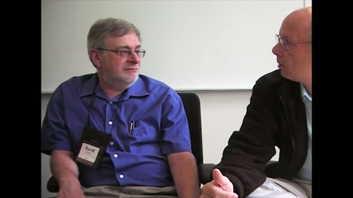[MP4] [1:05:06] [2014/09/17]What happens when you put three titans of programming language design and computing in a room and turn a camera on to capture what takes place? That's the thought experiment that led to this…
Ian Hays: Building a MultiDictionary Collection for .NET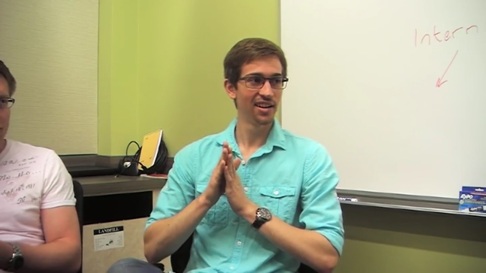[MP4] [0:38:44] [2014/07/24]Here, we meet Ian Hays, a Summer Intern on the Developer Division's .NET BCL team. Ian wants to be a professional software developer when he graduates from college, so having the opportunity to be a…
Conversation with Andrei Alexandrescu: All things D (the language)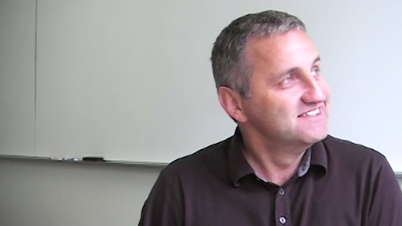[MP4] [0:50:08] [2014/06/04]It's always a pleasure to get to spend time with Andrei Alexandrescu and pick his formidable mind. Here, we turn the camera on and have a frank and honest conversation about the current state of the D…
A look inside Microsoft Studio at SXSW 2014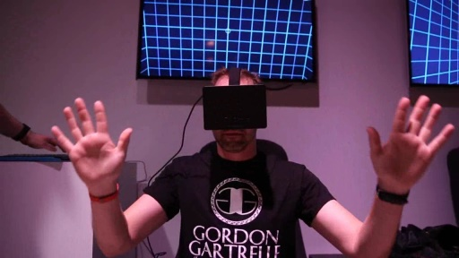[WMV] [0:01:16] [2014/03/09]Get a look at what's going on at Microsoft Studio at SXSW 2014.
From the Archives: Erik Meijer and Mark Shields - Compiling MSIL to JS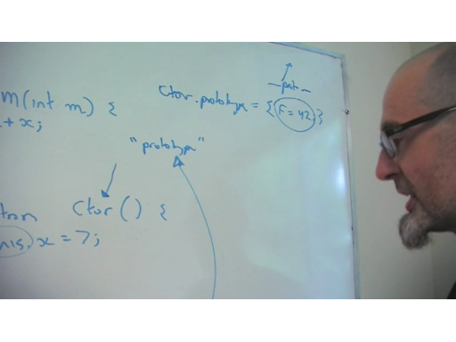[WMV] [0:33:59] [2013/08/28]This interview never shipped on C9, but why keep it hidden when we don't have to? From the archives, Erik Meijer and Mark Shields join us for a chat about compiling MSIL to JS. Erik!!! Tune in. Enjoy.…
Anders Hejlsberg, Steve Lucco, Luke Hoban: TypeScript 0.9 - Generics and More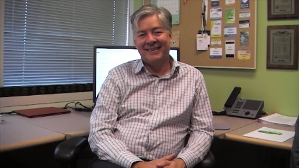[WMV] [0:42:32] [2013/06/19]Anders Hejlsberg, Steve Lucco, and Luke Hoban join us again for a conversation about TypeScript. What have they learned since TypeScript first became available in preview form? How are folks using it?…
Miguel de Icaza: Mono, Open Source, Visual Studio, and Xamarin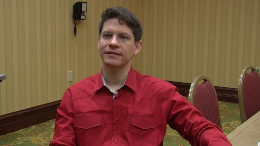[WMV] [0:30:05] [2013/04/25]At Xamarin Evolve 2013, I caught up with Xamarin CTO Miguel de Icaza after his keynote. It's been a while since I last chatted with Miguel, so it was great to catch up. Clearly, he and team have been…
Inside Windows 8: Martyn Lovell and Elliot H Omiya - The Windows Runtime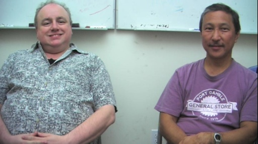[WMV] [0:47:21] [2012/11/13]Windows 8 introduces an application programming model for building new kinds of user mode apps called Windows Store Apps. The name reflects the new way users discover, download, purchase, rate, and…
Erik Meijer: Latency, Native Relativity and Energy-Efficient Programming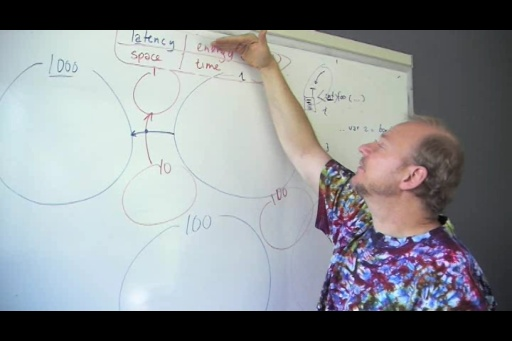[WMV] [0:44:59] [2012/07/27]I caught up with Erik Meijer recently to see what was on his mind (wish we could do this more often as his mind is typically full of very interesting things at any given time!). Erik had just read an…
.NET 4.5 in Practice: Bing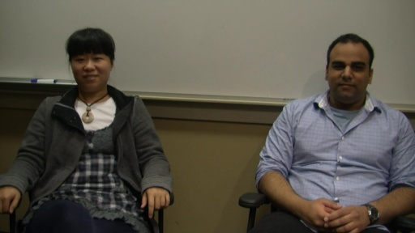[WMV] [0:37:20] [2012/06/25].NET GC developer Maoni Stephens, Performance Architect Vance Morrison and Bing front end developer Mukul Sabharwal join us for a conversation about .NET 4.5 in practice. We spent some time with…
Dare Obasanjo: SkyDrive - Personal Storage in the Cloud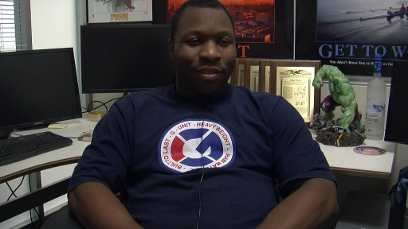[WMV] [0:35:11] [2012/05/15]It's been way too long since Dare Obasanjo (of RSS Bandit and Carnage4Life fame) has appeared on C9. The last time was several years ago in an interview conducted by me and Scoble on a summer day…
E2E: Donna Malayeri, Gilad Bracha, Luke Hoban - Web Programming and More [WMV] [0:58:30] [2012/05/14]
[WMV] [0:58:30] [2012/05/14]At Lang.NEXT 2012, several conversations happened in the "social room", which was right next to the room where sessions took place. Our dear friend, Erik Meijer, led many interesting…
E2E: Erik Meijer and Robert Griesemer - Going Go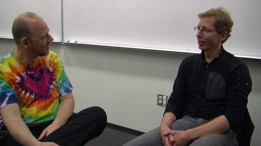[WMV] [0:44:03] [2012/05/07]At Lang.NEXT 2012, several conversations happened in the "social room", which was right next to the room where sessions took place. Our dear friend, Erik Meijer, led many interesting…
E2E: Erik Meijer and Jeroen Frijters - IKVM.NET (Java VM implemented in .NET)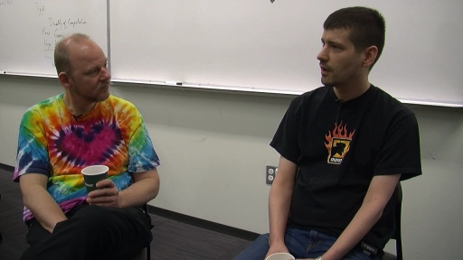[WMV] [0:28:03] [2012/05/01]At Lang.NEXT 2012, several conversations happened in the "social room", which was right next to the room where sessions took place. Our dear friend, Erik Meijer, led many interesting…
E2E: Erik Meijer and John Cook - R, Statistical Computing, Blogging and More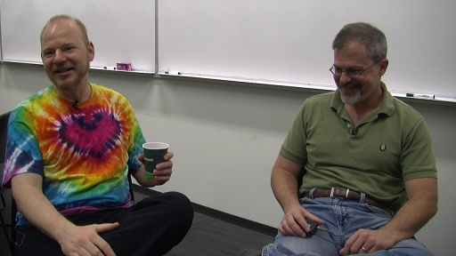[WMV] [0:29:24] [2012/04/23]At Lang.NEXT 2012, several conversations happened in the "social room", which was right next to the room where sessions took place. Our dear friend, Erik Meijer, led many interesting…
Stefan Karpinski and Jeff Bezanson - Julia Programming Language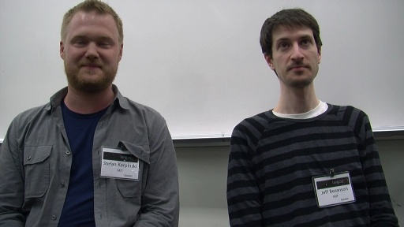[WMV] [0:25:34] [2012/04/19]"Julia is a high-level, high-performance dynamic programming language for technical computing, with syntax that is familiar to users of other technical computing environments. It provides a…
Emmanuel Stapf: Eiffel Programming Language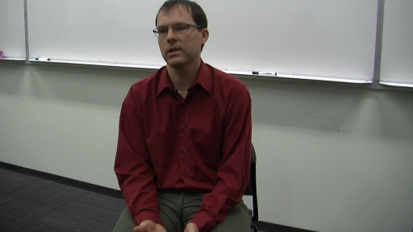[WMV] [0:21:09] [2012/04/17]The Eiffel programming language is an object-oriented language that is based on a fixed set of powerful principles like Design by Contract and Command-Query Separation. It's a very powerful language…
Mads Torgersen and Kim Bruce - Grace Programming Language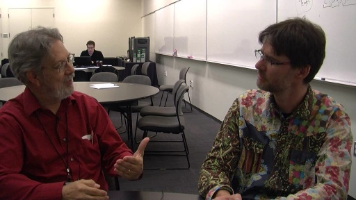[WMV] [0:15:05] [2012/04/17]At Lang.NEXT 2012 several conversations took place in the "social room" and we captured some of them for C9. Here, computer scientist and C# PM Mads Torgersen discusses the Grace programming…
Alexandrescu, Bright, Meijer, Moran: Pure versus Native (and much more)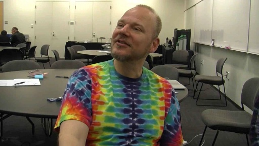[WMV] [0:53:41] [2012/04/12]Continuing with the series of conversations filmed in the "social room" at Lang.NEXT 2012, we present Andrei Alexandrescu, Walter Bright, Erik Meijer, and Andrew Adams-Moran…
Behind the scenes: Designing Microsofts reinvented certifications 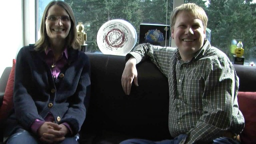[WMV] [0:21:54] [2012/04/11]Join the Cert Doctors, Dr. Sneath and Dr. Munson, as they talk about how Microsoft designs its certification exams as well as some new and more interactive question types for IT Pros and Developers.…
anode: An Experimental node.js Platform for Windows Azure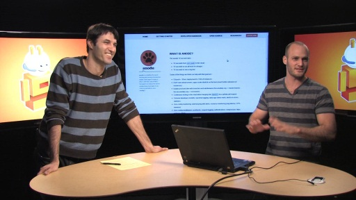[WMV] [0:22:46] [2012/03/20]anode is an experimental platform for rapidly prototyping web apps on Windows Azure. anode is built by Microsoft entirely with node.js and uses many great open source modules written by the awesome…
C9 Lectures: Donna Malayeri - F# 3.0 - Information Rich Programming, 1 of 1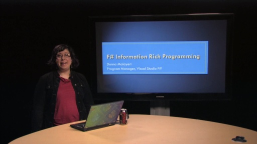[WMV] [0:44:00] [2012/03/20]Modern programming thrives on rich spaces of data, information and services. F# 3.0 brings integrated support for Information Rich Programming to the .NET platform. F# Type Providers and F# Queries…
Mads Torgersen, Donna Malayeri and Erik Meijer: (Re)Introducing Lang.NEXT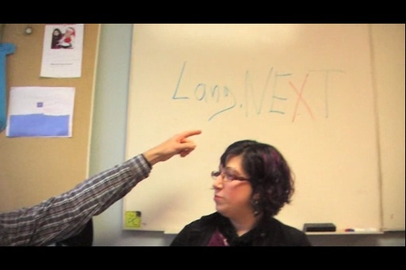[WMV] [0:14:54] [2012/03/16]Lang.NEXT is a programming languages conference, a geek festival for programming language designers and implementers from across the industry and academia. The goal is to share ideas and learn. The…
Matthew Podwysocki and Bart J. F. De Smet: RxJS Today and Tomorrow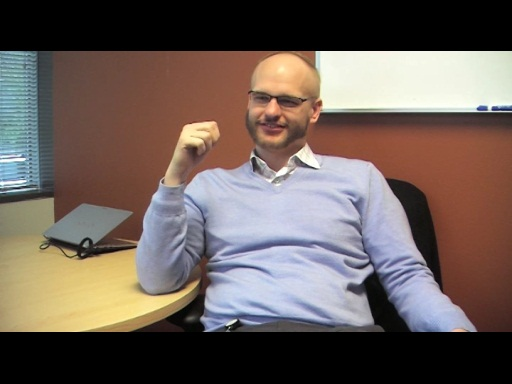[WMV] [0:42:14] [2012/03/05]The JavaScript implementation of Reactive Extensions (Rx), RxJS, continues to evolve under the direction of Matthew Podwysocki. RxJS provides Rx operators in JavaScript and it does this in a download…
Energy Efficient Cloud Computing for Developers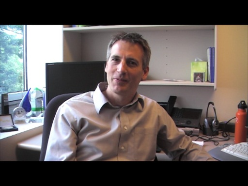[WMV] [0:23:42] [2012/02/29]Datacenter energy efficiency is a hot topic these days (how to keep thousands of machines cool without consuming too many electrons, etc.), but something that doesn't get quite as much attention in…
C++ AMP: The Test Team - Hallway Office Tour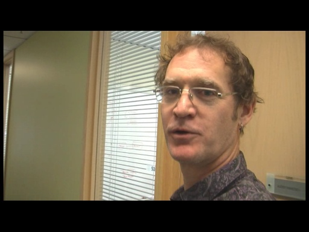[WMV] [0:46:43] [2012/02/25]C++ AMP (Accelerated Massive Parallelism) is a small set of open specification language extensions (two of them) and a single library (amp.h) that makes general purpose GPU programming (aka…
C++ AMP: Daniel Moth - Overview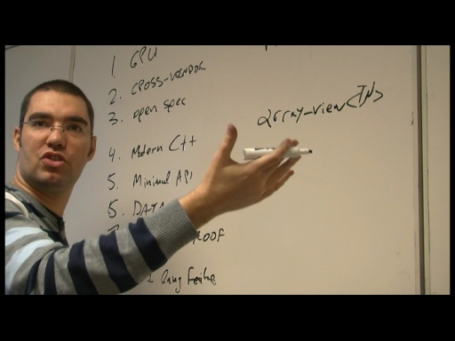[WMV] [0:26:58] [2012/02/22]C++ AMP (Accelerated Massive Parallelism) is a small set of open specification language extensions (two of them) and a single library (amp.h) that makes general purpose GPU programming (aka…
YOW! 2011: Nigel Dalton - On Being Agile, Lonely Planet, and Lean Development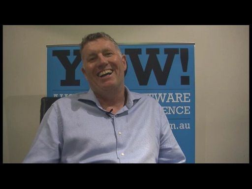[WMV] [0:33:34] [2012/01/05]In early 2000, having survived Y2K in the role of Software Development Manager at AXA Australia, Nigel Dalton fled to the USA to be CTO and COO of an Australian dot com startup in San Francisco -…
YOW! 2011: Bjorn Freeman-Benson - Software Psychology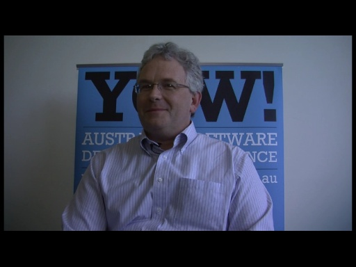[WMV] [0:26:37] [2012/01/02]Bjorn Freeman-Benson is the Vice President of Engineering at New Relic - which produces cross-platform application and server performance monitoring software as a service (SaaS). He's been an engineer…
YOW! 2011: Aslak Hellesøy - Web Sockets and Webbit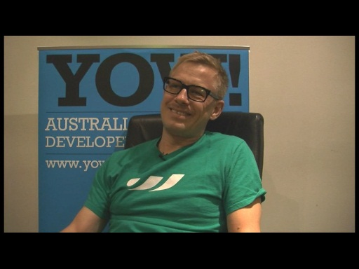[WMV] [0:19:17] [2012/01/02]Aslak Hellesøy is a Senior Software Engineer at DRW Trading in London and the creator of Cucumber. Aslak is also a contributor to Webbit, a Java event based WebSocket and HTTP server (and the subject…
YOW! 2011: Tony Morris - Functional Programming and Functional Thinking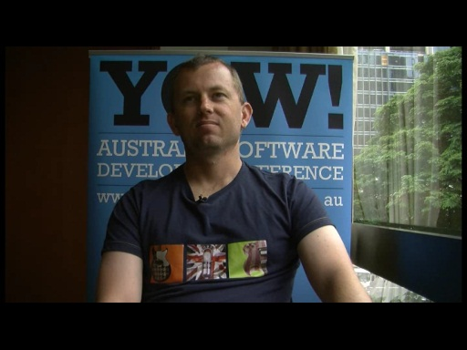[WMV] [0:24:23] [2011/12/30]Tony Morris is a developer who has deployed functional programming techniques in industry for over 10 years. He's also a teacher and key player in Australia's increasingly vibrant functional…
YOW! 2011: Dave Thomas on YOW!, Technoculture, Modern Programming, and More [WMV] [0:22:45] [2011/12/30]
[WMV] [0:22:45] [2011/12/30]Dave Thomas is the godfather of YOW!, a platform-agnostic developer conference that spans three cities in Australia once a year (Melbourne, Brisbane and Sydney(workshops only)). Australia is home to a…
YOW! 2011: Martin Thompson - On Concurrent Programming and Concurrency Folklore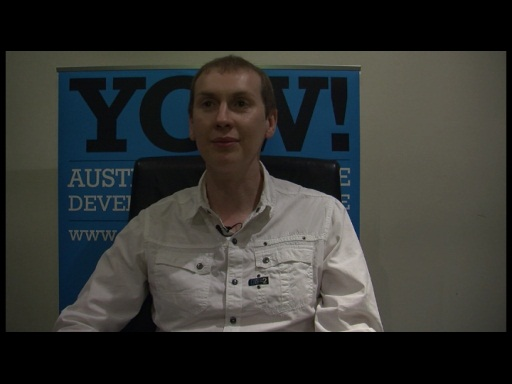[WMV] [0:23:26] [2011/12/27]Martin Thompson is the creator of Disruptor, a concurrent programming framework. He's passionate about solving hard problems - like writing scalable concurrent software systems. His session at YOW! -…
Simon Peyton-Jones and John Hughes - It's Raining Haskell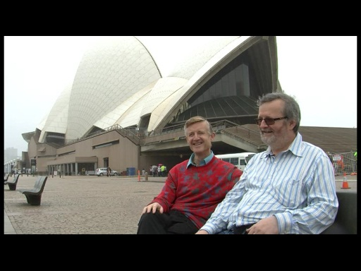[WMV] [0:29:10] [2011/12/26]Ever wonder what would happen if you happened upon Simon Peyton-Jones, author of the Glasgow Haskell Compiler (GHC) and a key contributor to the Haskell functional programming language, and John…
YOW! 2011: Steve Vinoski - Riak Core, Erlang and Frisbee Freestyle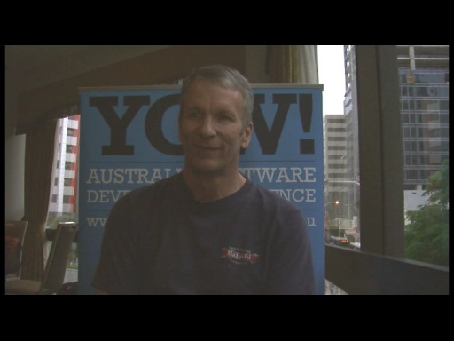[WMV] [0:23:33] [2011/12/24]Steve Vinoski is an architect at Basho Technologies in Cambridge, MA, USA. He is a senior member of the IEEE and a member of the ACM. Steve is regarded as an expert in the areas of middleware and…
YOW! 2011: Kevin O'Neill - Mobile App Development, PlayUp, Objective-C, Windows Phone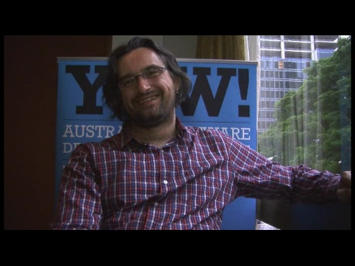[WMV] [0:30:29] [2011/12/24]Kevin O'Neill is the technologist at large for the social sports network PlayUp where he's working to build the ultimate social network for live sport on mobile devices. Kevin's fingerprints can also…
YOW! 2011: Joe Albahari - LINQ, LINQPad, and .NET Async (and a little Rx, too)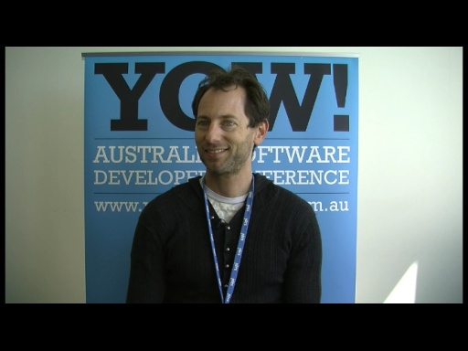[WMV] [0:25:29] [2011/12/23]Joe Albahari is the creator of LINQPad, an application that many of you use in your daily development of .NET applications/services, especially those that employ LINQ in some fashion. It's just a…
YOW! 2011: Allen Wirfs-Brock and Rob Manson - Ambient Computing, Augmented Reality, and JavaScript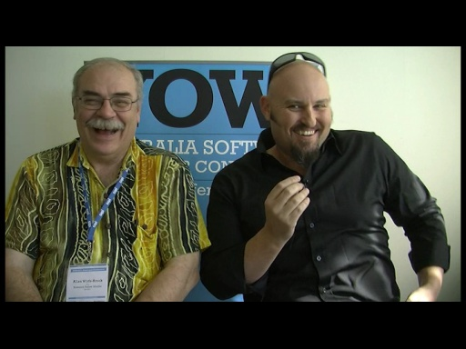[WMV] [0:37:51] [2011/12/22]Allen Wirfs-Brock is a Research Fellow at Mozilla working on the next version of JavaScript (EcmaScript, to be precise), codenamed "Harmony." Allen is the chief editor of the EcmaScript…
YOW! 2011: Damian Conway - Temporally Quaquaversal Virtual Nanomachine Programming Made Easy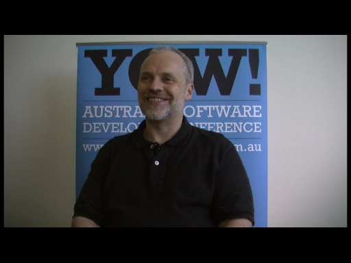[WMV] [0:23:18] [2011/12/20]Damian Conway is widely-known for his event speaking and software development training skills—areas in which he's among the world's best. He's also contributed important modules to Perl and is an…
YOW! 2011: Mike Lee - The Road to Appsterdam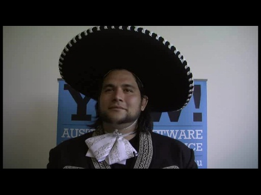[WMV] [0:25:23] [2011/12/19]Mike Lee is an exceptional developer and an even better person. His life's story is fascinating and the work he does benefits developers around the world, especially those who build mobile apps.…
YOW! 2011: Simon Peyton-Jones - Closer to Nirvana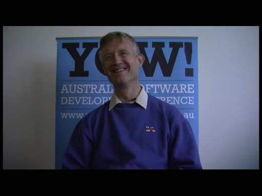[WMV] [0:37:03] [2011/12/16]I caught up with Simon Peyton-Jones, author of the Glasgow Haskell Compiler (GHC) and a key contributor to the Haskell functional programming language, at YOW! 2011. Simon is a pure functional guy.…
SPLASH 2011: Kresten Thorup - Erlang, Erjang, and Building Reliable Systems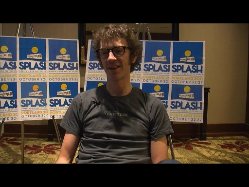[WMV] [0:24:04] [2011/11/27]Kresten Thorup is the CTO of Trifork, creator of Erjang (Erlang implementation running on the JVM), and implementer of Java generics. He is deeply interested in distributed systems programming and…
SPLASH 2011: Sam Tobin-Hochstadt - JavaScript Modules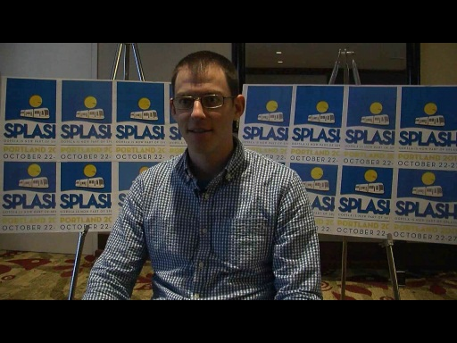[WMV] [0:16:06] [2011/11/23]Sam Tobin-Hochstadt is an associate professor at Northeastern University. Sam focuses on a variety of programming language research projects including Racket (and Typed Racket), Fortress, and…
SPLASH 2011: William Cook - Objects, Orc, Hybrid Partial Evaluation, and More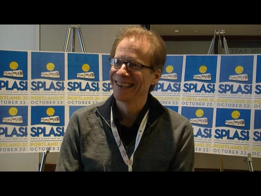[WMV] [0:47:26] [2011/11/19]William Cook is an Associate Professor in the Department of Computer Sciences at The University of Texas at Austin. His research focuses on object-oriented programming, programming language design,…
SPLASH 2011: David Ungar - Self, ManyCore, and Embracing Non-Determinism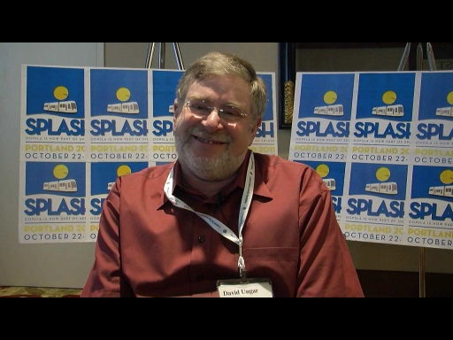[WMV] [0:21:59] [2011/11/17]David Ungar is a visionary computer scientist and engineer currently working at IBM Research. He is the co-creator of the object-oriented Self programming language, which is a language influenced by…
The Roslyn Project - Meet the Design Team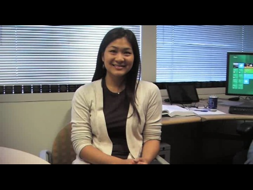[WMV] [0:33:43] [2011/11/17]What is Roslyn? Traditionally, compilers are black boxes – source code goes in one end and object files or assemblies come out the other end. The Roslyn project changes that model by opening up the…
SPLASH 2011: Mark Miller - Secure JavaScript [WMV] [0:23:01] [2011/11/16]
[WMV] [0:23:01] [2011/11/16]Mark Miller is the main designer of the E and Caja object-capability programming languages, inventor of Miller Columns, a pioneer of agoric (market-based secure distributed) computing, an architect of…
SPLASH 2011: Andrew Black and James Noble - The Grace Programming Language Project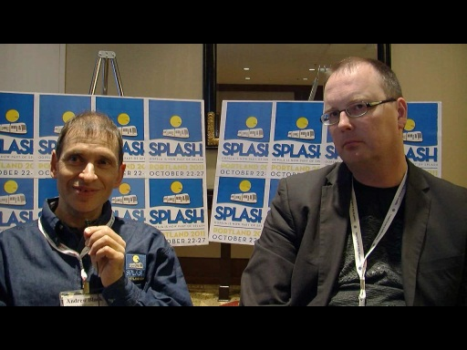[WMV] [0:28:28] [2011/11/12]The Grace Programming Language project is a research effort that aims to make learning how to program easier by baking "educational abstractions" into the language itself - it's an object…
Asynchronous Programming for C++ Developers: PPL Tasks and Windows 8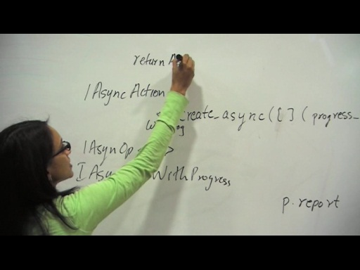[WMV] [0:28:31] [2011/11/11]The Parallel Patterns Library (PPL) provides a task-based asynchrony model that can make working with asynchronous APIs much easier for C++ programmers. Asynchronous APIs are pervasive in the…
SPLASH 2011: Dave Thomas - On Modern Application Development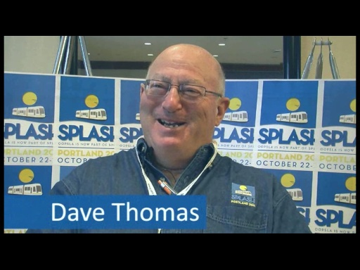[WMV] [0:29:33] [2011/11/11]It's been a while since we've been lucky enough to catch up with Dave Thomas. Dave is well known for his work in object oriented programming language design, dynamic language development (SmallTalk),…
SPLASH 2011: Gilad Bracha - Dart, Newspeak, and More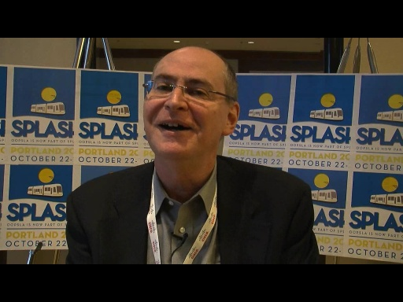[WMV] [0:37:00] [2011/11/09]It's always a pleasure to get the chance to chat with Gilad Bracha. So, whenever we can, we do. We've had Gilad on C9 quite a few times over the years and the conversations are always enlightening and…
Summer Interns 2011: Parallel Watch Visualizers for Visual Studio 11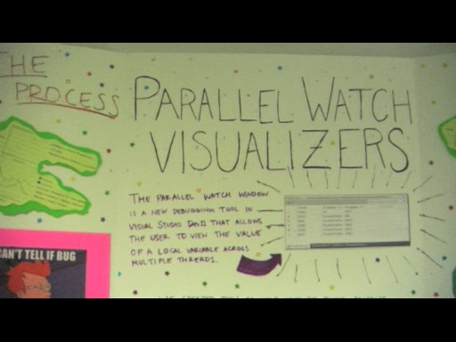[WMV] [0:17:23] [2011/11/09]CS undergrads Jen Solyanik, Wes Rupert and Stephen Grugett join us to discuss their experiences and accomplishments as summer 2011 interns at Microsoft. They were part of a team of engineering interns…
SPLASH 2011: Brendan Eich - JavaScript Today and Tomorrow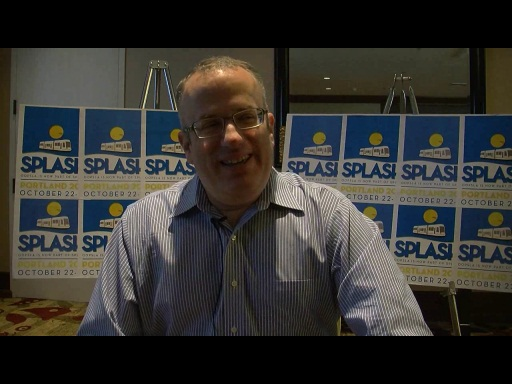[WMV] [0:15:19] [2011/11/08]Recently, Channel 9 was invited to attend the great SPLASH conference. What is SPLASH? Systems, Programming, Languages and Applications: Software for Humanity. SPLASH is an annual conference that…
Announcing Python Tools for Visual Studio 1.1 Alpha[WMV] [0:44:18] [2011/11/04]Python Tools for Visual Studio 1.1 is now available in Alpha! PTVS turns VS into an IDE for Python. PTVS a free, open source plug-in for Visual Studio 2010 from Microsoft's Developer Division. PTVS…
Announcing the Official Release of Rx![WMV] [0:33:22] [2011/06/30] You've learned a lot about Rx (Reactive Extensions) on C9 over the years. You've seen Rx go from incubation stage to DevLabs project to having a happy home on the MSDN Data Developer Center. Today,…
Talkin' C++ with Alon, Marius, Bruno, and Jim[WMV] [0:24:10] [2011/03/16] Recently, MVPs from all over the world descended on Redmond to interact with product teams as well as each other. They were given access to information relating to technology futures, roadmaps,…
MVP Summit 2011: Meet C++ MVPs Angel, PJ, Tom and Sheng[WMV] [0:10:31] [2011/03/16] Recently, MVPs from all over the world descended on Redmond to interact with product teams and fellow MVPs. They were given access to information relating to technology futures, roadmaps, etc. Al the…
Talkin' C++ with Kate Gregory[WMV] [0:27:10] [2011/03/11] I recently caught up with the great Kate Gregory, C++ MVP, Microsoft Regional Director, and all around excellent developer. Kate and several other MVPs from around the world were on the MS…
IE9 RTW Due Date, A Big Thank You, MIX11, and a Unicorn Named Frank[WMV] [0:10:43] [2011/03/10] It's always fun to talk to Dean Hachamovitch about IE. This conversation is no exception except for how early we filmed and that Dean and Ryan Gavin are joined, since it took place at that magical…
Tony Goodhew: VC++ Developer Communication - Questions and Answers[WMV] [0:43:12] [2011/03/02] Tony Goodhew is a Microsoft veteran in the developer tools division and has returned home to his roots in VC++. He was a product manager on VC6 back in the day. One of Tony's priorities is…
John Platt: Introduction to Sho - A Playground for Data[WMV] [0:25:29] [2011/02/04] Sho is an interactive environment for data analysis and scientific computing that lets you seamlessly connect scripts (in IronPython) with compiled code (in .NET) to enable fast and flexible…
[Rise-t]
Visual Studio Async: Meet the team[WMV] [0:27:44] [2010/10/29] Meet some of the key folks behind the Async CTP, which contains a preview version of C# and VB.NET that contain two new modifiers, async and await (and iterators for VB.NET!), that will make it much…
Anders Hejlsberg: Introducing Async Simplifying Asynchronous Programming[WMV] [0:31:36] [2010/10/29] Microsoft Technical Fellow and C# creator Anders Hejlsberg explains the new C# and VB.NET asynchronous programming model, available as Async CTP now, which makes async programming much easier for…
Inside the new Channel 9: Random Team Drive-By[WMV] [0:34:05] [2010/09/17]
Meet the people behind Channel 9. This is an OldSchool stroll through the halls. Who are the key players on 9? Also, we drop in on Duncan and Dan in the midst of a bug triage. Tune in.
Aman Kansal: Inside Joulemeter[WMV] [0:34:14] [2010/09/15]
Joulemeter is a software-based Microsoft Research project designed to measure the energy usage of virtual machines (VMs), servers,
desktops, laptops, and even individual software programs running…
Mark Aggar: Energy Smart Software[WMV] [0:32:01] [2010/09/14]
Ensuring that applications work well with Windows Power Management is a vital step in providing a solid end user experience and reducing IT energy costs. Developers need to ensure their…
Garrett Serack - Open Source on Windows and the CoApp Project[WMV] [0:29:21] [2010/08/19]In this screencast, Garrett Serack from the Microsoft Open Source Technology Center talks about his new project, the Common Opensource Application Publishing Platform (CoApp). CoApp aims to create a…
ELC 2010: Rich Hickey and Joe Pamer - Perspectives on Clojure and F#[WMV] [0:23:55] [2010/08/10]After a long day of sessions at
Emerging Languages Camp 2010, I caught up with two of the day's presenters, Clojure creator Rich Hickey (you've met Rich before in an
Expert to Expert episode with…
Jonathan Edwards: Programming Futures and Declarative Objects[WMV] [0:24:16] [2010/08/06]"The biggest problem with programming is that we don’t agree on what the problem is", says
Jonathan Edwards, who is first and foremost a practicing programmer. Jonathan also spends a…
ELC 2010: Standing Roundtable - AmbientTalk, BitC, Caja, Mirrors, Newspeak, Type Classes and More[WMV] [0:36:27] [2010/08/06]A group of us gathered after a long day of language sessions at ELC 2010 and a conversation just happened. Sure, we talked about doing this before the camera started rolling,
but I pressed record…
A Conversation with Gilad Bracha[WMV] [0:41:48] [2010/07/31]Recently, I got the chance to spend a few days at the Emerging Languages Camp at OSCON 2010 in Portland, Oregon. It was great to learn about so many new (and not-so-new) approaches
to programming…
Bill Hill: One Ocean[WMV] [0:07:45] [2010/07/03]Bill Hill has always been a fan favorite on Channel 9. In fact, his early interviews helped us crystallize the original (now referred to as OldSchool since
we have other great methodologies in place…
The Archivist: Your friendly neighborhood tweet archiver[WMV] [0:22:41] [2010/06/29]The Archivist is a new lab/website from Mix Online that lets
people archive, analyze and export tweets. Here’s a little more about why we built The Archivist and who we built it for.
Sounds good,…
A Conversation with Jaron Lanier[WMV] [0:50:40] [2010/05/20]Jaron Lanier is an extraordinary individual. He is the father of virtual reality, a forceful pundit for "software humanism," an accomplished musician, a philosopher, and
a Microsoft…
Arvind Suthar: Listening to Customers[WMV] [0:23:41] [2010/05/20]
Arvind Suthar, Director of Service for Microsoft Online Services, is a key part of how Microsoft Online Services helps to make our customers and partners successful. Arvind runs the team in the…
[Second-IE9-Platform-Preview-Available-for-Developers]
IE9 and same markup: A look at SVG in IE9[WMV] [0:05:21] [2010/05/05]
In this presentation, Patrick Dengler, senior program manager for Internet Explorer looks at how developers can use SVG in web sites with support in the
IE9 Platform Preview, and explores…
IE9 and same markup: A look at CSS3 borders and corners in IE9[WMV] [0:04:53] [2010/05/05]
In this presentation, Sharon Newman, program manager for Internet Explorer looks at how developers can use CSS3 borders and corners in web sites with support in the
IE9 Platform Preview, and…
IE9 and same markup: A look at DOM events in IE9[WMV] [0:05:58] [2010/05/05]
In this presentation, Tony Ross, program manager for Internet Explorer looks at how developers can use DOM events in web sites with support in the
IE9 Platform Preview, and explores challenges…
E2E: Erik Meijer and Cormac Herley - Rational Rejection of Security Advice by Users[WMV] [0:48:04] [2010/04/24]Dr. Cormac Herley spends most of his time thinking about why and how computer users reject security advice (from both fellow humans and software
security warning prompts). Recently, his paper,…
Engkoo: English Learning Vertical Search from Bing and MS Research in China[WMV] [0:08:08] [2010/04/23]
Matt Scott of Microsoft Research walks us through Engkoo: the new “dictionary” vertical search of Bing in China. What makes this English-Chinese assistance tool unique is that it unifies human…
Introducing Docs for Facebook: Making Your Documents Social[WMV] [0:05:58] [2010/04/22]Microsoft FUSE Labs has created (and released to the web today) a new social experiment that aims to add some "friendliness" to your documents:
Docs - a way for you to discover, create and…
[Silverligh-4-is-here]
S. Somasegar (Soma): Introducing Visual Studio 2010 RTM[WMV] [0:24:26] [2010/04/13]Senior Vice President S. Somasegar (aka Soma) joins us for a chat about Visual Studio 2010 RTM, which is available
today. Visual Studio 2010 and .NET Framework 4 offer an unprecedented level of…
James Senior: Introducing Web Camps[WMV] [0:10:06] [2010/04/10]
function webCamps () { day1.learn(); day2.build(); }
Interested in learning how new innovations in Microsoft's Web Platform and developer tools like ASP.NET 4 and Visual Studio 2010 can…
Eron Kelly: Moving Microsoft to the Cloud - Past, Present and Future[WMV] [0:33:18] [2010/04/08]
Eron Kelly, Director of Microsoft's Business Online Services Product Management, discusses the key role that Microsoft Online Services plays in Microsoft's transformation from a software company to…
Pro Scrum Developer Intro[WMV] [0:07:03] [2010/03/24]
The Professional Scrum Developer program is a uniquely valuable five-day experience for software developers. The course guides teams on how to turn product requirements into potentially shippable…
Introducing RxJS - Reactive Extensions for JavaScript[WMV] [0:30:01] [2010/03/20]Reactive Extensions for Javascript have arrived. Hello RxJS!! You can now use Rx combinators in JavaScript. RxJS provides easy to use conversions from existing DOM, XmlHttpRequest and jQuery events to…
Introducing the IE9 Developer Platform Preview [0:23:22] [2010/03/20]
[0:23:22] [2010/03/20]Get your hands on
the IE9 developer platform preview!The IE team has been very busy working on the next version of Internet Explorer, aka IE 9. Today, you can get your hands on a developer preview…
Erik Porter and Nathan Heskew: Introducing Orchard[WMV] [0:29:17] [2010/03/18]Orchard will create shared components for building ASP.NET applications and extensions, and specific applications that leverage these components to
meet the needs of end-users, scripters, and…
Ken Schwaber and and Sam Guckenheimer: Professional Scrum Development[WMV] [0:44:03] [2010/03/18]Ken Schwaber, co-inventor of Scrum, and Sam Guckenheimer, Group Product Planner for Visual Studio discuss the Professional Scrum Developer (PSD) program around VS 2010. PSD includes a unique and…
IE 9 Performance Pipeline Overview[WMV] [0:23:31] [2010/03/17]Get your hands on
the IE9 developer platform preview!IE Performance PM Jason Weber and Performance Dev Lead Venkat Kudallur take us through the updated and improved performance pipeline in IE…
IE 9 and SVG - Past, Present and Future of Vector Graphics for the Web[WMV] [0:19:37] [2010/03/17]Get your hands on
the IE9 developer platform preview!Graphics programming master Christian Fortini and IE SVG PM Patrick Dengler discuss IE9's native support for SVG. Some very cool demos here!
IE 9 - Surf on Metal with GPU Powered HTML5[WMV] [0:14:31] [2010/03/17]Get your hands on
the IE9 developer platform preview!We drop in on IE PM and graphics enginering legend Ted Johnson and IE dev platform PM John Hrvatin to discuss what we learned in
Dean's…
Brian Beckman: On Analog Computing, Beckman History and Life in the Universe Redux[WMV] [0:40:35] [2010/03/12]
It's been far too long since we've chatted with the great Brian Beckman, an astrophysicist, software architect, and
Channel 9 icon. Some of you may know him as the wizard who appears out of
…
Steven Cloherty: Microsoft Online Services Risk Management[WMV] [0:27:42] [2010/02/25]In this Microsoft Online Services executive video, we meet Steven Cloherty, Senior Director of Risk Management for Microsoft Online Services. Steven runs our risk management team which includes…
Brother to Brother: The Sampsons - From Rocky's Boots to the Cloud Frontier[WMV] [0:49:08] [2010/02/24]Mike Sampson (aka Sampy) is a lead developer who has worked on two iterations of Channel 9 and several other websites that sprung from our team. Before joining us, Sampy was a developer on the Visual…
[Internet-Explorer-9-at-MIX10]
Greg Leake: Stocktrader - Overview[WMV] [0:34:22] [2010/02/10]Greg Leake is very passionate about loosely-coupled service-oriented n-tiered application architecture. He has created an impressive service-oriented application called
StockTrader. We will be…
C9 Conversations: Yuri Gurevich On Logic, Imperative, Abstraction and Algorithms[WMV] [0:48:42] [2010/02/10]
Welcome to the latest installment of
C9 Conversations. For this episode, we were very fortunate to get a chance to converse openly with one of the world’s preeminent mathematical logicians, the…
Greg Leake: Stocktrader Demo, 1 of 3[WMV] [0:32:25] [2010/02/10]Greg Leake is very passionate about loosely-coupled service-oriented n-tiered application architecture. He has created an impressive service-oriented application called
StockTrader. We will…
Greg Leake: Stocktrader Demo, 3 of 3[WMV] [0:09:27] [2010/02/10]Greg Leake is very passionate about loosely-coupled service-oriented n-tiered application architecture. He has created an impressive service-oriented application called
StockTrader. We will…
Greg Leake: Stocktrader Demo, 2 of 3 [WMV] [0:26:26] [2010/02/10]
[WMV] [0:26:26] [2010/02/10]Greg Leake is very passionate about loosely-coupled service-oriented n-tiered application architecture. He has created an impressive service-oriented application called
StockTrader. We will…
Ron Markezich: Microsoft Online Services Corporate Vice President[WMV] [0:25:41] [2010/02/02]
Meet Ron Markezich, the Microsoft corporate vice president responsible for Microsoft’s Online Services business. Learn about Ron’s career at Microsoft, and hear his thoughts on the past, present,…
Expert to Expert: Inside LINQ-to-SharePoint[WMV] [0:55:43] [2010/01/22]
You first met Bart De Smet in an episode of Expert
to Expert with the great Erik Meijer leading the conversational charge.
LINQ-to-Anything was a very popular E2E episode and the 100th…
MFC: Implementing handlers for preview, thumbnail and search filtering[WMV] [0:03:09] [2010/01/21]This is a short demonstration of new MFC features in MFC and ATL which help with integrating your application’s file type into Windows Explorer. This is done by implementing handlers for preview,…
Mike Ziock: Inside Microsoft Online Services Operations[WMV] [0:23:17] [2010/01/07]
For enterprise customers to small businesses, being able to subscribe to software services versus taking on the responsibilities and costs associated with deployment and management of software…
Karsten Januszewski and Tim Aidlin: Introducing Incarnate[WMV] [0:18:17] [2009/12/17]Our friends and neighbors at
Mix Online have just released the latest version of their site which includes a new lab offering:
Incarnate. Incarnate is a REST-based service that uses peoples’…
[Channel-9-Emerges-in-China]
E2E2E: Meijer, Rys and Vick - Programming Data[WMV] [0:53:56] [2009/12/09]You asked for it
and we delivered: The first E2E2E (expert to expert to expert). Here, Erik Meijer converses with language designer Paul Vick (of VB fame and now focusing on the language code-named…
Bharat Shah: Microsoft Online Services Overview[WMV] [0:25:55] [2009/12/08]Bharat Shah is the General Manager of Microsoft's Online Services division. His group is responsible for taking Microsoft's business productivity software to the cloud, essentially turning traditional…
Inside Windows 7: Recovering Windows from System Degradation and Boot Failures[WMV] [0:44:49] [2009/12/01]Windows 7 is capable of certain levels of self-repair, as you've learned. One of the new capabilities in Windows is its ability to recover from serious failures that can impact the OS's ability to…
C9 Conversations: Brian Beckman on Complexity[WMV] [0:39:56] [2009/11/28]In this second installment of
C9 Conversations, a format where we sit down with various big thinkers to discuss a wide range of big topics related to computing; all in high quality video and audio,…
Joe Stegman: Silverlight 4 - Out of Browser Evolves [WMV] [0:22:24] [2009/11/20]
[WMV] [0:22:24] [2009/11/20]Joe Stegman, Director of Program Management on the Silverlight team, joins us to discuss Silverlight 4's Out of Browser improvements (OOB
means you can run Silverlight applications on the desktop,…
Wes Dyer and Stephen Toub: Rx and Px - Working Together[WMV] [0:20:48] [2009/11/20]Reactive Extensions for .NET (Rx) released this week during PDC09. Rx uses Parallel Extensions for .NET (Px) for all of it's concurrent and parallel
computing needs. How is it using Px,…
IE 9: Surfing on the GPU with D2D[WMV] [0:13:45] [2009/11/19]The IE team is busy working on the next version of the world's most popular browser. IE 8 is the most widely used browser on Windows.
IE 9 is currently in the oven and the IE team is ready to talk…
GalaxyZoo: Citizen Science for Classifying Galaxies[WMV] [0:31:46] [2009/11/19]
Mike Taulty interviews Chris Lintott and Arfon Smith about the GalaxyZoo project. GalaxyZoo, hosted on GalaxyZoo.org, invites individuals to participate in Citizen Science and provides an easy to…
IE 9: Standards and Interoperability[WMV] [0:14:53] [2009/11/19]The IE team is busy working on the next version of the world's most popular browser. IE 8 is the most widely used browser on Windows. IE
9 is currently in the oven and the IE team is ready to talk…
IE 9: First look at the new JS Engine[WMV] [0:21:08] [2009/11/19]The IE team is busy working on the next version of the world's most popular browser. IE 8 is the most widely used browser on Windows.
IE 9 is currently in the oven and the IE team is ready to talk…
Manuvir Das: Windows Azure One Year Later[WMV] [0:47:37] [2009/11/18]Manuvir Das discusses the current state of Windows Azure. The last time we spoke was at last year's PDC when we announced Azure to the world. Here, we dig into hat's new today with Azure. How have…
Getting Started with Rx Extensions for .NET[WMV] [0:02:07] [2009/11/18]Reactive Extensions for .NET, Rx, is here!!!
Reactive Extensions team member and software developer Jeffrey Van Gogh shows us how to get started with Rx, how to install the bits, find the help…
Erik Meijer: Rx in 15 Minutes - Rx is Here!!!!! [WMV] [0:13:09] [2009/11/18]
[WMV] [0:13:09] [2009/11/18]Reactive Extensions for .NET, Rx, is here!!!
Erik Mejier explains what Rx is and why it matters in 15 minutes or less!
Introducing "Dallas"[WMV] [0:26:46] [2009/11/18]Christian Liensberger, Moe Khosravy and Microsoft introduces a new information service, Microsoft Codename “Dallas,” also available through Pinpoint and built completely on the Windows Azure platform…
E2E: Erik Meijer and Dave Campbell: Data, Databases and the Cloud[WMV] [0:33:03] [2009/11/14]Dave Campbell is a Technical Fellow at Microsoft and long time database architect. Today, Dave works on the hardest problems
facing SQL's foray into the new world of cloud computing. His latest…
MFC: Integrating your application with the Windows Restart Manager[WMV] [0:04:58] [2009/11/13]This is a short demonstration of new MFC features in MFC which help with integrating your application with the Windows Restart Manager. This is done by implementing handlers for restart and crash…
Windows Embedded: Past, Present and Future[WMV] [0:36:48] [2009/11/13]
Windows Embedded Standard is a general purpose OS, based on the Windows codebase, that is highly modular and fine tuned to run on a number of devices ranging in size and complexity (but less…
C9 Conversations: Yousef Khalidi on Cloud Computing[WMV] [0:21:28] [2009/11/11]Yousef Khalidi is a Distinguished Engineer with a rich history in both operating system design and distributed computing. Yousef is
responsible for the overall design of Windows Azure, Microsoft's…
Microsoft Security Development Lifecycle (SDL) and Software Security Today[WMV] [0:33:00] [2009/11/07]
The Microsoft Security Development Lifecycle (SDL) team recently released two new security tools, BinScope Binary Analyzer and MiniFuzz File Fuzzer, to help you write more secure code.
Jeremy…
Dave Thompson: Turning Software into Services[WMV] [0:20:40] [2009/10/28]Dave Thompson, Corporate Vice President, Microsoft Online Services, is an industry veteran with 30 years of experience in IT. In his leadership
role for Microsoft Online Services, Dave is…
Wolfgang Grieskamp and Keith Stobie: Spec Explorer - An Overview[WMV] [0:18:17] [2009/10/27]
Spec Explorer is a visual tool for modeling software behavior and generating test suites from those models. It has just been released on
DevLabs.Here, architects Wolfgang Grieskamp and Keith…
Pat Brenner: Visual Studio 2010 - MFC and Windows 7[WMV] [0:22:23] [2009/10/22]Microsoft Foundation Classes for C++ (MFC) continue to evolve and will ship with Visual Studio 2010. In fact, you can start playing with the updated and improved MFC right now by downloading…
Rico Mariani: Inside Visual Studio Beta 2 - Performance and Reliability[WMV] [0:48:57] [2009/10/20]I caught up with the great Rico Mariani, Visual Studio's Chief Software Architect, after his keynote at a VS partner conference held on the Microsoft campus.
He tells us all about the improvements…
Immo Landwerth: Future Directions of Native Image Generation via NGen[WMV] [0:31:55] [2009/10/14]Immo Landwerth is a self-confessed Niner who spends a fair amount of time lurking on C9 and watching videos. In fact, he decided to apply for an internship at Microsoft this past Summer because of the…
Introducing Microsoft Office Starter 2010 [WMV] [0:03:28] [2009/10/09]
[WMV] [0:03:28] [2009/10/09]
Microsoft introduces Office Starter 2010, which includes Word Starter 2010 and Excel 2010. Brian Albrecht and Scott Kahler tell us more about these basic, ad-supported versions of our most popular…
Introducing Click-to-Run in Office 2010[WMV] [0:03:57] [2009/10/09]
John Jendrezak and Trevor McDiarmid give us a first look at Click-to-Run, an innovative new Electronic Software Distribution (ESD) technology for Office 2010 that utilizes Microsoft’s streaming and…
Niners on 9: Sven Groot - Past, Present and Future[WMV] [0:40:51] [2009/10/08]Sven Groot is a long time Niner and one of the more active contributors to the C9 forums (you'll note that Sven answers technical questions when he can
and has always been respectful in the way he…
[Annoucing-Windows-7-Developer-Boot-Camp-at-PDC09-and-its-free-for-all-to-attend]
Andrew Kennedy: F# Units of Measure[WMV] [0:32:44] [2009/09/23]Floating point values in F# can have associated
units of measure, which are typically used to indicate length, volume, mass, and so on. The built-in type float takes an optional unit-of-measure…
[Parallel-Performance-Tuning-for-Haskell]
George Moore: Windows Azure Business Model for Developers - An Introduction[WMV] [0:14:37] [2009/09/09]21 year Microsoft veteran and Software Architect George Moore is involved in defining and implementing an effective strategy for taking Windows Azure from technology preview to enterprise business…
David Grant and Ryan Kivett: !Analyze - Automatic Root Cause Analysis[WMV] [0:28:20] [2009/09/03]!Analyze is an automatic root cause analysis tool for software failures. For years, it has provided insight to engineers both inside and outside of Microsoft. It is a key enabling technology behind…
Christian Kleinerman: Introduction to SQL Server Project Madison[WMV] [0:27:48] [2009/09/02]The SQL Server team is working on a new project code-named “Madison”. "Madison" is a highly scalable data warehouse appliance that delivers
performance at low cost through massively…
Donald Farmer and Julie Strauss: Inside Project Gemini[WMV] [0:29:17] [2009/09/02]Office Marketing
says: "Need to make timely business decisions without having to use complicated and sluggish analytical applications? Love to use Excel? Project Gemini is an Excel 2010 add-in…
Peter Villadsen and Gustavo Plancarte: X++ to MSIL[WMV] [0:30:47] [2009/09/02]Dynamics Program Manager Peter Villadsen and Software Developer Gustavo Plancarte teach us about a new tool they've developed that translates X++ byte code into MSIL. We learn a lot of history…
Doug Hauger: Inside the Windows Azure Platform Business Model[WMV] [0:14:59] [2009/08/18]Meet Doug Hauger, Azure General Manager. Doug owns the business side of the Azure Platform equation. How was the pricing determined? Are there different plans for "garage innovators" versus…
STM.NET: Who. What. Why.[WMV] [0:52:33] [2009/08/15]Software Transactional Memory is no longer a pipe dream or the stuff of academics.
STM.NET, as it's called, is ready for your experimentation. The goal of STM.NET is to be able to exploit…
David Fields and Bill Karagounis: Inside Windows 7 - Reliability, Performance and PerfTrack[WMV] [0:44:12] [2009/08/11]
PerfTrack is the feedback and monitoring system inside of Windows 7 that performs measurements on, well, all things related to the overall performance of the OS, especially as it relates to system…
Inside the Active Template Library (ATL) Security Update[WMV] [0:34:17] [2009/07/29]
Today, Microsoft announced the details of an out-of-band security update that impacts ATL components and controls (like ActiveX controls, for example) -> Developers
who have built controls…
Michael Fortin: Windows 7 Efficiency[WMV] [0:28:58] [2009/07/23]The Windows 7 project involved very efficient software engineering planning and execution. It is no surprise that an equivalent level of efficiency exists throughout the OS (efficiency in how the OS…
Expert to Expert: Erik Meijer and Roger Barga - Introduction to Dryad and DryadLINQ[WMV] [0:32:25] [2009/07/17]
Microsoft Research recently announced the availability, under
Academic Licensing, of
Dryad, an infrastructure which allows a programmer to use the resources of a computer cluster or a data…
Scott Guthrie and Christian Schormann: Web Programming, Design Tools and Silverlight 3[WMV] [0:19:02] [2009/07/11]Today, we announce the general availability of Silverlight 3 and the
Release Candidate of Expression 3. To celebrate this momentous occasion we had a few conversations with Scott Guthrie about what…
Scott Guthrie: Silverlight 3 is here! [WMV] [0:18:04] [2009/07/11]Today, we announce the general availability of Silverlight 3 and the
Release Candidate of Expression 3. To celebrate this momentous occasion we had a few conversations with Scott Guthrie about what…
Expert to Expert: Harry Shum - General Purpose Search, Decision Engines and Bing[WMV] [0:40:31] [2009/07/01]Harry Shum is the VP of Engineering for
Bing, Microsoft's latest search engine offering (well, it's more than a search engine - it's a so-called Decision Engine, but what does that mean,…
Mark Russinovich and David Solomon: Windows Internals 5 Released[WMV] [0:15:24] [2009/06/20]Windows kernel expert and kernel "professor" David Solomon and Windows Kernel Technical Fellow Mark Russinovich have written another great book covering, in great detail, the internal…
Bogdan Mihalcea: The New VC++ Project/Build system - MSBuild for C++[WMV] [0:36:38] [2009/06/19]Bogdan Mihalcea is a developer on the VC++ build and project system team. He and team have been very busy rewriting the VC++ build system in order to take advantage of MSBuild, which…
Jimmy Schementi: Inside IronRuby[WMV] [0:43:23] [2009/06/11]
Jimmy Schementi is a Program Manager (and developer) on the IronRuby team. IronRuby is an
Open Source implementation of the
Ruby programming language for
.NET, heavily relying on Microsoft's…
.NET Framework++: Moving Forward and Staying Compatible with the Past[WMV] [0:38:36] [2009/06/10]You've recently learned a good deal about the next version of the CLR here on Channel 9. One of the things that is top of mind for engineers who create and consume
the .NET framework (CLR + BCL)…
Ian Carmichael: The History and Future of the CLR[WMV] [0:38:06] [2009/06/10]Ian Carmichael has been working on the CLR team since before Microsoft came up with the .NET branding for our managed platform and the virtual machine that powers it all, the Common Language Runtime.…
Surupa Biswas: CLR 4 - Resilient NGen with Targeted Patching[WMV] [0:28:18] [2009/05/29]Surupa Biswas is a Program Manager on the CLR team working on NGen, CLR's Native Image Generator. The Native Image Generator (ngen.exe) creates native images, which are files containing compiled…
Shawn Farkas: CLR 4 - Inside the new Managed Security Model[WMV] [0:39:20] [2009/05/28]Senior SDE Shawn Farkas digs into the new security model in CLR 4. Gone are the days of head scratching complexity when it comes to reasoning about security in the managed world. The main goal for CLR…
Raja Krishnaswamy and Jesse Kaplan: CLR 4 - Inside No-PIA[WMV] [0:27:50] [2009/05/27]Principal Architect Raja Krishnaswamy, Program Manager Jesse Kaplan and team have created a new way to streamline and simplfiy PIA-based COM Interop: rather than including an entire PIA (Primary…
CLR 4: Debugging and Profiling API Enhancements[WMV] [0:26:37] [2009/05/27]Developers Thomas Lai and David Broman join Program Manager Jon Langdon to share with us some of the new debugging and profiling enhancements in CLR 4. They've done a lot work in the upcoming release…
Jason Zander: Perspectives on Visual Studio 2008 and the Future of VS[WMV] [0:33:47] [2009/05/23]With Visual Studio 2010 beta 1 out the door and available for your coding pleasure, we figured it would be a great time to talk toJason Zander about Visual Studio 2008, which has been available since,…
Inside .NET 4: Meet the BCL Team[WMV] [0:52:48] [2009/05/22]Much of what you can do with .NET, from a compositional perspective, is enabled by the vast functionality housed in .NET's huge base class libraries (in fact, the BCL is what provides all the…
Microsoft Manufacturing Toolkit[WMV] [0:19:18] [2009/05/21]The Microsoft Manufacturing Toolkit is a set of guidance documentation and working code samples that demonstrate the use of the Microsoft platform to build publish/subscribe (“pub/sub”),…
Luke Hoban: Latest version of F# Released - What's the story? What's next?[WMV] [0:46:24] [2009/05/21]With the
release of VS 2010 Beta 1 today, F# is officially a part of the in-box VS family in the sense that it ships with VS 2010 as a first class language for use in building your .NET projects…
Luca Bolognese: C# and VB.NET Co-Evolution - The Twain Shall Meet[WMV] [0:33:20] [2009/05/13]For most of their lifetimes, C# and VB.NET have evolved at their own pace and in their own ways (C# added iterators, VB.NET didn't. VB.NET added XML Literals, C# didn't. etc, etc...). Today, Luca…
Chris Sells: On the History of DevCon, DSLs and Oslo[WMV] [0:17:30] [2009/05/12]Chris Sells has been hosting DevCons for the past 5 years. What is DevCon? Why? What's the aim of these small conferences?
This year, Chris decided to focus DevCon 2009 on DSLs (Domain Specific…
Expert to Expert: Martin Fowler and Chris Sells - Perspectives on Domain Specific Languages[WMV] [0:21:12] [2009/05/12]Microsoft Olso Program Manager Chris Sells and DSL expert Martin
Fowler discuss the history and future of Domain Specific Languages (DSLs). This was filmed at
DevCon 2009, which took place on the…
Joe Mistachkin: Eagle - Extensible Adaptable Generalized Logic Engine[WMV] [0:11:24] [2009/05/08]Eagle (Extensible Adaptable Generalized Logic Engine) is an implementation of the
Tcl scripting language for the
Common Language Runtime (CLR). It is designed to be a universal scripting solution…
Axum Published! Tutorial: Building your first Axum application[WMV] [0:05:19] [2009/05/08]
Not familiar with Axum? Here's a C9 interview with the Axum team to refresh your memory
(it's a domain specific language for concurrent programming, formerly known as "Maestro",…
[Get-Windows-7-RC]
Philip Wadler and Erik Meijer: On Programming Language Theory and Practice[WMV] [0:15:05] [2009/05/05]Lang.NET Symposium 2009 was held on Microsoft's campus (make sure you
watch the talks, which are available for your viewing pleasure). We were of course there and conducted several interviews with…
Jason Olson: Composing Programming Languages, F# and OO [WMV] [0:15:40] [2009/05/02]
[WMV] [0:15:40] [2009/05/02]Jason Olson is a programming language evangelist in addition to his duties as a managed (.NET) tools evangelist. You know him from
C9. He's a long time Niner and has always been passionate about…
[Windows-7-Release-Candidate-is-here-for-MSDN-and-TechNet-subscribers]
Emmanuel Stapf: Eiffel and Contract Oriented Programming[WMV] [0:26:16] [2009/04/30]The
Eiffel programming language is an object-oriented language that is based on a fixed set of powerful principles like Design by Contract and Command-Query Separation. It's a very powerful language…
[Glimmer-a-jQuery-Interactive-Design-Tool]
Anders Hejlsberg and Gilad Bracha: Perspectives on Programming Language Design[WMV] [0:26:29] [2009/04/29]Lang.NET Symposium 2009 was held on Microsoft's campus (make sure you
watch the talks, which are available for your viewing pleasure). We were of course there and conducted several interviews with…
Harry Pierson: Intro to Lang.NET 2009[WMV] [0:08:00] [2009/04/29]Harry Pierson, Program Manager of IronPython, ran this year's Lang.NET Symposium held on Microsoft's campus (make sure you
watch the talks, which are available for your viewing pleasure). We were…
Jeff Sandquist: Channel 9 Through the Years[WMV] [0:36:24] [2009/04/07]When we launched Channel 9 five years ago we weren't sure what to expect from the community and from Microsoft. What would developers think of this non-corporate, free wheeling website designed by and…
Brian Beckman: On the General Theory of Channel 9 and Life in the Universe[WMV] [0:17:21] [2009/04/07]Brian Beckman, software architect and astrophysicist, discusses his General Theory of Channel 9, what Channel 9 means to him personally, his love for the Niner nation, the power of humanized corporate…
Larry Osterman: Happy Birthday Channel 9![WMV] [0:03:40] [2009/04/07]Larry Osterman, Software Engineer extraordinaire and long time Niner, reflects on Channel 9, Niners,
Birthdays and his almost 25 years at Microsoft (wow, Larry, that's impressive!!!!). Larry loves…
Scott Guthrie: Happy Birthday Channel 9![WMV] [0:01:33] [2009/04/07]Scott Guthrie, VP of all things .NET (and IIS), wishes Channel 9 and the Niner nation a very happy 5th birthday!!! Thanks for spending time on Channel 9, Scott! You're a rock star. Happy Birthday,…
Erik Meijer: Happy Birthday Channel 9![WMV] [0:02:46] [2009/04/07]High Priest of the Lamda Calculus Erik Meijer, wearing celebration lights around his neck, reflects on Channel 9, Niners and the importance of showcasing the humans behind technology. Erik is the star…
Mark Russinovich: Happy Birthday Channel 9![WMV] [0:03:15] [2009/04/07]Mark Russinovich, long time Niner, SysInternals co-creator, Microsoft Technical Fellow and Windows Kernel Jedi Master, reflects on C9 through the years and explains what Channel 9 means to him. Mark's…
Anders Heljsberg: Happy Birthday Channel 9![WMV] [0:02:18] [2009/04/07]Anders Hejlsberg, Microsoft Technical Fellow and C# Creator, reflects on Channel 9 at 5, Channel 9's birth, Niners, and to the future of Channel 9. Happy Birthday, Niners!!!
Cheers!!
Soma: Happy Birthday Channel 9![WMV] [0:03:20] [2009/04/07]Senior VP of the Developer Divison, S. Somasegar (Soma), is one of the biggest fans of Channel 9 and the Niner nation. Here, Soma reflects on Channel 9, the importance of customer engagement and, of…
Eric Lippert: Happy Birthday Channel 9![WMV] [0:07:16] [2009/04/07]Five years ago, Eric Lippert played the esteemed role of C9 interview guinea pig. He was the first engineer we interviewed
and it was his interview that showed us that we might just be on to…
Don Box and Chris Anderson: Happy Birthday Channel 9![WMV] [0:06:45] [2009/04/07]Don Box and Chris Anderson reflect on their experience with Channel 9 over the years, Channel 9 in the future and sing a little birthday song for this very special day. 5 years of Channel 9!!!! Happy…
[Mark-Russinovich-Pushing-the-Limits-of-Windows-Paged-and-Nonpaged-Pool]
MultiPoint Revisited: SDK 1.1 Released[WMV] [0:13:26] [2009/03/24]
In many classrooms around the world, groups of students must share one computer—there are simply not enough computers to go around. While the existing solution to this problem is to acquire more…
Miguel de Icaza: Moonlight[WMV] [0:35:10] [2009/03/20]Miguel de Icaza of Mono fame and the
Moonlight team recently announced Moonlight 1.0. What are the Moonlight People up to these days? What does Miguel think about Silverlight 3, anyway?Dan…
[IE8-RTM-Top-5-Reasons-for-ITPros-to-deploy]
Scott Guthrie: Inside Silverlight 3[WMV] [0:47:39] [2009/03/19]Scott Guthrie, Corporate Vice President, leads the teams that create the .NET developer and designer technologies and tools.
Silverlight 3 has arrived in beta form.
Expression 3 also ships today…
[Countdown-to-MIX09-10-Minutes-with-Bill-Buxton]
IE8: Dev Tools[WMV] [0:12:27] [2009/02/25]John Hrvatin, Program Manager on the IE Team, joins us (again) for a quick lap around IE8's almost golden (meaning RC quality/state)
Developer Tools (aka Dev Tools). What's changed since we last…
IE8: Accelerators[WMV] [0:07:35] [2009/02/25]Jon Seitel, Program Manager on the IE team, sits down with us to discuss IE8's Accelerators feature. How do they work? How do you work them (from both a developer's and end user's perspective)? What…
IE8: Search[WMV] [0:08:26] [2009/02/24]Sharon Cohen, Program Manager on the IE Team, sits down with us to discuss some very interesting (oh, and useful too) new Search features in IE8. Tune in.
IE8: Web Slices[WMV] [0:08:41] [2009/02/24]IE8 introduces Web Slices; a feature dreamt up by Jane Kim, Program Manager on the IE Team. WebSlices enable users to subscribe to specially marked content on a Web page. When the content changes, the…
[MIX09-Workshop-Clinics-on-WPF-and-Silverlight]
IE 8 Behind the Scenes: Testing IE[WMV] [0:31:13] [2009/01/30]Internet Explorer, like all applications released by Microsoft and other software companies, undergoes immense amounts of rigorous testing before being released in the wild. Given the nature of
what…
Scott Guthrie On Silverlight, MIX09, Keynotes, Developers and Designers[WMV] [0:17:54] [2009/01/29]It's always fun to talk to
Scott Guthrie, VP of all things .NET and one of Microsoft's most prolific technical bloggers (he actually writes all of the entries on his blog which is quite a feat given…
Inside IE 8 RC1 with Dean Hachamovitch and Jason Upton[WMV] [0:37:07] [2009/01/27]IE team General Manager Dean Hachamovitch and IE Test Manager Jason Upton sit down with me to discuss the significance of today's
IE 8 RC1 release. What did the IE team learn from the Beta 2…
Expert to Expert: The Basics of SmallBasic[WMV] [0:45:39] [2009/01/21]SmallBasic is a new programming language aimed at beginners. It was created as a side project of
Vijaye Raji, a software developer on the Oslo team. SmallBasic is a very limited language with only a…
Larry Osterman: Windows 7 Audio - What's New[WMV] [0:56:39] [2009/01/15]The great Larry Osterman discusses what excites him most about Windows 7's new audio features. Of course, we talk about all things audio as Larry is a 24 year veteran of Microsoft
and best known as…
[New-sessions-announced-for-MIX09]
[Countdown-to-MIX09-Even-in-Trying-Financial-Times-You-Cant-Afford-to-Stay-Home]
Yochay Kiriaty: Introducing Windows 7 on C9[WMV] [0:07:00] [2009/01/09]Meet Yochay Kiriaty, Windows 7 Technical Evangelist. Yochay will be producing several interviews on Windows 7 for Channel 9 over the coming days and weeks. We'll have 8 of his videos posted over
the…
Jim Mosher: On Interaction Management and the FAST Search Engine[WMV] [0:21:28] [2009/01/06]Jim Mosher, Senior Program Manager in the Microsoft Enterprise Search Group, sits down with us to discuss Interaction Management.Interaction Management enables users to interact with and consume…
Inside MIX: The Philosophy of MIX - Past, Present and Future[WMV] [0:32:57] [2008/12/16]MIX co-creators Jennifer Ritzinger (she owns the conference), Mike Swanson (he owns keynotes and overall strategy) and Thomas Lewis (he owns the MixOnline site and contributes to the strategic…
Jeffrey Richter and his AsyncEnumerator[MP4] [0:35:05] [2008/12/04]Jeffrey Richter’s Power Threading Library contains his AsyncEnumerator class which uses C# iterators to allow developers to perform asynchronous operations via an easy to use synchronous programming…
[Niner-Interview-Questions-Rico-Mariani-Visual-Studio-Futures]
Channel 9 on Mars: Inside the Mars Exploration Mission - Past, Present and Future[WMV] [0:20:12] [2008/11/18]While in LA for
PDC2008, we were lucky enough to get the chance to head down to Pasadena for a tour and interview at the
Jet Propulsion Laboratory. Nic Fillingham and I grabbed a cab and met up…
Newton Sanches: Live Mesh P2P[WMV] [0:16:59] [2008/11/04]Meet Live Mesh Test Lead Newton Sanches. His job is to ensure that Live Mesh data synchronization happens successfully and efficiently. When does Live Mesh utilize Peer to Peer data transfer as…
Scott Isaacs: Introducing Web Sandbox[WMV] [0:43:04] [2008/11/01]Web Sandbox is a project from
Live Labs, a group focused on Internet technologies. Dragos Manolescu (who worked on Live Labs and Political Streams) and Scott Isaacs (who worked on Windows Live…
Countdown@PDC: Day 4 Recap[WMV] [0:09:29] [2008/10/31]Mike and Ritzy wax on the Day 4 at PDC 2008. It's a bittersweet day since it's the final day of PDC. Mike and Ritzy share interesting stats about the event, talk aboutPDC 2009 (they go back to work…
Ori Amiga: Mesh Mobile[WMV] [0:24:10] [2008/10/30]Niners loved Ori’s
last appearance talking about Live Mesh, so we brought him back to show off the combination of two of his passions: the Mesh and his car. Ori started hacking with the Live…
Steven Sinofsky at the PDC2008 Open Space[WMV] [0:25:33] [2008/10/30]
Steven Sinofsky participates in an Open Space Discussion on Windows 7 at the PDC.
Countdown@PDC: Day 3 Recap[WMV] [0:09:30] [2008/10/30]Mike and Ritzy wax on Day 3's events and talk about next year's PDC announcement. Rick Rashid gives the Day 3 keynote. Anders Hejlsberg and Daniel Moth are neck and neck for Day 3's most popular…
George Chrysanthakopoulos: Microsoft CCR and DSS Toolkit 2008[WMV] [0:10:27] [2008/10/30]The great George Chrysanthakopoulos (CCR creator) chats with us briefly about the new CCR and DSS Visual Toolkit.
You first learned about CCR right here on Channel 9. Since that time it's had a very…
Don Box, Paul Vick and Chris Anderson: Introducing M[WMV] [0:35:45] [2008/10/30]Don Box, Chris Anderson and Paul Vick dig into their new programming language (well, it's a data modeling language that you use to create DSLs to express your data as opposed to a general purpose…
Countdown@PDC: Day 2 Recap[WMV] [0:09:54] [2008/10/29]Mike and Ritzy wax energetically (which is surprising given how exhausted they must be!) on the goings on of PDC2008 Day 2. Windows 7 was one of the big announcements today (and all PDC attendees…
Ray Ozzie: Reflections on Azure[WMV] [0:06:02] [2008/10/29]Microsoft CSA Ray Ozzie joins us for a quick chat (you can imagine how busy he is...) about the complexities of designing and implementing the Azure Services Platform, his key take-aways from the past…
David Treadwell: Inside Live Services[WMV] [0:16:52] [2008/10/29]Vice President of Windows Live David Treadwell explains Azure's Live Services. He whiteboards the architecture of Live Services (love getting VPs to the whiteboard!), discusses what's available in the…
Countdown@PDC 2008: Day 1 Recap[WMV] [0:09:48] [2008/10/28]Jennifer and Mike wax eloquently on day one at PDC 2008. A lot of news today. Jennifer gets a badge (by the great Adam Kinney himself). Attendees feedback on the "bag". This was shot on…
John Shewchuk and Dennis Pilarinos: Inside .NET Services[WMV] [0:32:20] [2008/10/28]Technical Fellow John Shewchuk and Principal Group Manager Dennis Pilarinos explain the past, present and future of the Azure's .NET Services. John and Dennis are the orginal thinkers behind .NET…
Windows Azure: Cloud Computing in Application Services[WMV] [0:34:32] [2008/10/28]Technical Strategist Steve Marx sits down with us to discuss what Windows Azure means for
developers. The basic idea is to make it really simple for developers to deploy web applications and…
Manuvir Das: Introducing Windows Azure[WMV] [0:39:44] [2008/10/28]Manuvir Das, Director in the Windows Azure team introduces us to Microsoft's new cloud operating system, Windows Azure. Is Windows Azure a new OS from Microsoft? Well, sort of, but not in a strict…
Lynne Hill: Parallel Computing Platform - The Vision and Future[WMV] [0:28:48] [2008/10/24]Over the past few months you've seen several interviews with members of Microsoft's Parallel Computing Platform team and we've learned about tooling advances, managed support
for parallelism…
Expert to Expert: Natural Language and Computational Linguistics[WMV] [0:57:33] [2008/10/23]Ever wonder what it takes to compute language (language in this case refers to what we humans speak and or/write)? From
Wikipedia: Computational linguistics is an
interdisciplinary field dealing…
Countdown to PDC2008: Rick Rashid, a Researchers Researcher[WMV] [0:09:51] [2008/10/19]17 years in the same job? Yep, Senior Vice President of Microsoft Research, Rick Rashid has been doing the same thing since the first day he joined the firm, and he’s still loving it. Listen to Rick…
Parallel Computing Platform: Asynchronous Agents for Native Code[WMV] [0:43:27] [2008/10/17]Here, we continue our focus on
concurrency and parallelism with native (C++) Parallel Computing Platform team members Rick Malloy, Niklas Gustafsson, Mike Chu and Stephen Toub. This…
Rahul Patil: Complexities of Testing Concurrency[WMV] [0:39:22] [2008/10/15]You've been hearing a lot lately about parallelism and concurrency here on Channel 9 and the fact that before you know, you'll be writing highly concurrent code due to the
advent of multi-core and…
Parallel Computing Platform: Overview and Future Directions[WMV] [0:35:55] [2008/10/13]The Parallel Computing Platform team's David Callahan (Distinguished Engineer) and Keith Yedlin (Product Unit Manager) sit down with me to discuss Microsoft's vision for general purpose Parallel…
Countdown to PDC2008: Badges!? We dont need no stinkin badges[WMV] [0:09:27] [2008/10/11]Yes you do if they’re
PDC Badges! Collecting PDC Badges is the way for anyone attending PDC to capture their experience at the PDC conference. Just for showing up at registration you’ll receive…
Josh Holmes and Glenn Vanderburg: Dynamic Languages and Unit Testing[WMV] [0:28:53] [2008/10/11]JAOO 2008 coverage continues with Ruby expert and Relevance
consultant
Glenn Vanderurg sits down with UX Architect Josh Holmes to discuss dynamic languages and the importance of unit testing. With…
Parallel Computing Platform: An Integrated Approach to Tooling[WMV] [0:42:19] [2008/10/11]The Parallel Computing Platform team's Steve Teixeira (PUM), Daniel
Moth (PM and Channel 9 Screencaster Extraordinaire!) and Sean Nordberg (GPM) sit down with me to discuss Microsoft's overall…
The Concurrency Runtime: Fine Grained Parallelism for C++[WMV] [0:39:02] [2008/10/09]We've spent a fair amount of time on Channel 9 discussing
concurrency and parallelism with various people. In particular, the folks who are writing the Parallel Computing Platform. Everything we've…
Jeffrey Snover, Martin Fowler and Neil Ford: Domain Specific Languages[WMV] [0:33:09] [2008/10/08]JAOO 2008 coverage continues with a discussion covering domain specific languages with the great
Martin Fowler, Chief Scientist at
ThoughtWorks, Neil Ford, Architect and Meme Wrangler at ThoughWorks…
Erik Meijer, Dave Thomas and Pratap Lakshman: Perspectives on JavaScript and Language Design[WMV] [0:52:40] [2008/10/07]JavaScript is a language that appears to have a long lifespan given its ubiquity on the web. It pretty much powers the client-side in-page execution of hundreds of millions of web pages. As a…
Anders Hejlsberg and Guy Steele: Concurrency and Language Design[WMV] [0:34:53] [2008/10/06]This is the second year I've been lucky enough to take part in the cross-platform software engineering conference
JAOO. Like
last year, I was very fortunate to get to sit down with a few key…
IE 8: Compatibility and Versioning[WMV] [0:36:26] [2008/10/02]As software evolves so to does the need for newer software to remain compatible with older versions. In the case of IE the notion of backwards compatibility is quite daunting and of supreme importance…
Advanced Windows Debugging: An Introduction with Mario Hewardt and Daniel Pravat[WMV] [0:43:09] [2008/09/11]Software Developers Mario Hewardt and Daniel Pravat understand the complexities of debugging applications that run on Windows. In fact, they understand it so well they wrote a book,
Advanced…
PDC08: Parallelism Track and PreCon with Stephen Toub[WMV] [0:06:05] [2008/09/06]Parallelism will be an important theme of PDC08 (http://microsoftpdc.com/). You'll want to get up to speed with the current state of the art in parallel computing patterns and platform technologies
…
Countdown to PDC2008: Secrets Revealed[WMV] [0:09:37] [2008/09/05]
Surface, SharePoint, Live Platform, Identity, Mesh, SQL Server 2008, Exchange, Ad Platform, Office Communication Server, Windows 7, Open XML, Silverlight, ASP.NET, Oslo, Virtualization, XNA and so…
IE 8: Dev Tools - An Introduction with John Hrvatin[WMV] [0:30:05] [2008/08/28]
IE 8 Beta 2 is now available!
John Hrvatin, Program Manager of Internet Explorer Developer Tools sits down with me to discuss at a high level the new additions to IE 8's developer tools (aka Dev…
Windows Home Server: PDC 08, New Features, Meet some of the Team[WMV] [0:35:17] [2008/08/28]Windows Home Server is evolving. To learn about how to take advantage of the new capabilities of Windows Home Server, we sit down with Program Manager MCJ Saretto, Product Manager Mark Pendergrast and…
IE 8: Privacy - It's about more than cookies[WMV] [0:38:33] [2008/08/26]
When you navigate your browser to website A is website A the only site you're visiting?
IE 8 Beta 2 is almost out of the oven. Given this, we of course want to find out all about it straight from…
Synchronizing Data: Inside the Microsoft Sync Framework[WMV] [1:01:53] [2008/08/22]
The Microsoft Sync Framework is a comprehensive synchronization platform that enables collaboration and offline scenarios for applications, services and devices. It supports any kind of data type…
Gabriel Aul: N-State Chaos and Windows Performance[WMV] [0:44:58] [2008/08/19]Gabriel Aul is a 16 year Microsoft veteran who has always had his hand in the chaotic world of system performance and reliability, from technical product support and testing to being a leader on the…
Windows Vista - 64 bit in the Mainstream[WMV] [0:17:31] [2008/08/15]Gary Schare and Bruce Burns sit down (well, sort of, Bruce stands, Gary leans) with us to talk about the sudden uptake of the latest Windows 64 bit client OS. It's very encouraging that Windows 64 is…
Vince Orgovan: Windows Vista Telemetry[WMV] [0:36:52] [2008/08/12]Windows Vista contains a much improved telemetry system that collects fault data and sends detailed reports to Microsoft that are used in fixing problems that cause apps to hang/crash (of course, this…
C# 4.0: Meet the Design Team[WMV] [0:52:59] [2008/07/11]What's the C# team up to these days? Who's on the C# 4.0 design team, anyway? With the looming problem of manycore facing developers now and certainly in the near future (to a much greater extent -…
Inside Silverlight 2 Beta 2[WMV] [0:38:35] [2008/06/11]Silverlight 2 Beta 2
has been released. We wanted to meet some of the developers of this SL incarnation to learn firsthand about what's in the bits. One of the truly cool new features in this…
UGTV (User Group Television) for Developer Debuts![WMV] [0:19:24] [2008/05/29]
User Group Television (UGTV) is a monthly webcast dedicated to bringing informative programming to User Groups worldwide while providing Microsoft the ability to introduce up and coming information…
MSDN/TechNet Site Redesign: More Useful, Better Experience and Search Really Works :)[WMV] [0:30:42] [2008/05/29]MSDN and TechNet have been re-skinned and re-built from the ground up to offer developers and IT Pros a better experience across the board. Much of the work that the team did was based on your
…
MSDN Social Platform: Social Bookmarking, User Profile, Enhanced Forums[WMV] [0:36:33] [2008/05/29]MSDN has been the de facto place on the web to find all things Microsoft platform developer related. It's not always been perfect, but certainly most Microsoft platform focused developers require MSDN…
Algorithms and Data Structures: Mike Swanson - Genetic Session Scheduler[WMV] [0:32:07] [2008/05/22]Mike Swanson is at it
again. You've seen Mike on Channel 9 before and you've probably used his
SWF to XAML converter that he wrote a while back. His
latest side project promises to be quite…
Tandy Trower: Robotics Update[WMV] [0:25:19] [2008/05/06]We caught up with Tandy Trower recently to find out what's new with in
Microsoft Robotics World, now named
Microsoft Robotics Developer Studio 2008 (got to love our naming schemes, eh?).…
Istvan Cseri and Nigel Ellis: SQL Server Data Services Architecture[WMV] [0:41:00] [2008/04/08]We recently posted a very interesting conversation with Technical Fellow and database guru Dave Campbell
covering some of the new innovative work going on over in SQL Server World. Paul touched on…
Mark Light and Bohdan Raciborski: Windows XP on Flash-Based Ultra Low Cost PCs[WMV] [0:42:45] [2008/04/04]How does Windows perform on ultra low cost PCs with less than 2GB of storage? Mark Light and Bohdan Raciborski from the
Unlimited Potential Group discuss the challenges and opportunities with…
Ted Neward: On Java and .NET, Software Academics versus Practioners, General Purpose Programming…[WMV] [0:35:53] [2008/04/03]Ted Neward (the Dude) sits down with me to discuss programming languages and related topics. Ted is a software architect and consultant that spends a great deal of his time working
in the area of…
What's new in the BizTalk Adapter Pack[WMV] [2008/04/03]BizTalk adapter pack constitutes WCF-based adapters for line of business systems including SAP, Oracle DB and Siebel. This presentation by Mahadevan Venkatachalam positions the adapter pack, discusses…
Douglas Crockford, Alex Russell and Joseph Smarr: On the Past, Present and Future of JavaScript[WMV] [0:43:26] [2008/03/20]
JavaScript is a massively popular language. Programs written in JavaScript can be deployed to more users and more machines than any other language given the prominence of script-enabled web…
All About Mary Jo[WMV] [0:16:39] [2008/03/13]
Mary Jo Foley has spent two decades watching and reporting on everything Microsoft. We thought it would be fun to turn the tables on Mary and find out who she is and why she does what she does. We…
Scott Guthrie: Inside Silverlight 2 Beta 1[WMV] [0:31:49] [2008/03/06]Scott Guthrie sits down with me to dig into and show off some of the features of
Silverlight 2 Beta 1. Among other very useful features, there is now design surface support for Silverlight UI in both…
Chris Wilson: Inside IE8 Beta 1 For Developers[WMV] [0:33:31] [2008/03/06]Today, we release IE8 Beta 1 to the world! It's a developer-focused version of IE 8 (thus the name) with a host of new dev features. Chris Wilson, Platform Architect and long time IE team veteran sits…
Ted Kummert, S. Somasegar (Soma), Bill Laing: On Trifecta Launching and Working Together - Enter SQL[WMV] [0:19:47] [2008/02/28]Ted Kummert, S. Somasegar and Bill Laing are the heads of state of the Data Division, Developer Division, and Windows Server respectively. Since we just launched three
major products, Visual Studio…
GDC08: James Silva, XNA, XBOX Arcade, Zune Gaming, Renegade Dishwasher Samurai Angst and Revenge[WMV] [0:34:21] [2008/02/27]
James Silva was one of the stars of GDC 2008, presenting his good work in a keynote where good things were announced by the XNA People... James created the winning entry in a recent XNA contest. His…
Miguel de Icaza and Dragos Manolescu: On Open Source, Mono and Moonlight[WMV] [0:40:17] [2008/02/19]More from Lang.NET 2008:Miguel de Icaza is well known for his work on Mono, the open source implementation of .NET. He and his band of merry developers have written a Silverlight implementation that…
Javed Sikander: Introduction to the OBA Composition Reference Toolkit[WMV] [0:30:32] [2008/02/12]Platform Architecture Director Javed Sikander discusses the new
OBA Composition Reference Toolkit
which was just announced at
ODC 2008. OBA has come a very long way since we last chatted with…
Charles Nutter and Wayne Kelly: Making Ruby Run on Static Virtual Machines - JRuby(JVM) and Ruby.NET[WMV] [0:28:39] [2008/02/12]At Lang.NET 2008, I caught up with two dynamic languages afficianados who have been working on a similar (and really hard)problem over the years: getting Ruby (a dynamic language) to run on a static
…
Dan Ingalls and Allen Wirfs-Brock: On Smalltalk, Lively Kernel, Javascript and Programming the Inter[WMV] [1:12:23] [2008/02/08]I recently attended Lang.NET 2008 and, as expected, learned a great deal from some of the industry's finest language and compiler minds.Here, we meet Dan Ingalls and Allen Wirfs-Brock, two legendary…
Arjun Bijanki: Making Sense of VC Intellisense[WMV] [0:35:49] [2008/01/25]
One of the very useful features of Visual Studio is Intellisense. C# and VB programmers have come to rely on this mechanism as a one of the means to being highly productive when using VS as their…
Welcome Dan Fernandez to the Channel 9 Team![WMV] [0:04:19] [2008/01/18]Dan Fernandez has joined the Channel 9 team!!! We are very lucky to have Dan as a.... Tune in and find out.
Wandering Around London's Science Museum with Some Niners[WMV] [0:13:28] [2008/01/17]While in London not too long ago I met up with some friendly neighborhood Niners to check out London's awesome Science Museum. Two of the usual suspects, blowdart and sabot are on the scene and…
Tom Raftery: On Blogging, Green Computing and other interesting topics[WMV] [0:23:04] [2008/01/15]Tom Raftery is blogger, podcaster and social media consultant. Tom consults to companies on social media (blogs, podcasts, wikis, etc) and how to use them for knowledge management, brand management,…
Tafiti Quick App: Behind the Scenes with Marc Mercuri[WMV] [0:31:08] [2008/01/12]Catherine Heller sat down with
Marc Mercuri, Architect on the platform incubation team, to discuss one of Marc’s recent incubation projects,
Tafiti, and how it evolved into a Windows Live Quick…
IE 8: On the Path to Web Standards Compliance - ACID 2 Test Pass Complete[WMV] [0:32:37] [2007/12/20]The IE team has been very hard at work on IE 8 for the past several months and they hit a huge milestone last Friday evening. The IE dev team checked in a bunch of code that included several new…
John Graham discusses the Office Developer Conference Real World Track[WMV] [0:04:23] [2007/12/13]Rob Barker spent some time with John Graham, who owns the ODC Real World Track, to talk about what the track is all about and what you can expect. This chat is the first in a series with the other…
Jerome Thiebaud discusses the Office Developer Conference Server Track[WMV] [0:05:24] [2007/12/13]Rob Barker spent some time with Jerome Theibaud, SharePoint Designer PM. Jerome owns the ODC Server Track, to talk about what the track is all about and what you can expect. This chat is the second in…
MIX 2008: What the hell is this MIX thing, anyway?[WMV] [0:55:47] [2007/12/12]Some of the brains behind MIX08 went for drinks and discussion with me to talk about what’s new, what’s hot and what’s not about the upcoming consumer web conference happening once again in Vegas at…
TechFest2007: Introduction to TechFest and MDCC[WMV] [0:06:46] [2007/12/11]The Microsoft Development Center in Copenhagen (MDCC) recently held it's second TechFest. Each year (this is year two of TechcFest) the good folks at MDCC
put on a show where local (Denmark and…
Eric Rudder: What am I up to these days?[WMV] [0:04:16] [2007/12/08]I caught up with Senior Vice President Eric Rudder while in Denmark recently. We were both there for the Microsoft Development Center Copenhagen's TechFest 2007. Several ISVs come to MDCC campus to…
Niners on 9: Littleguru, Zeus and JasonOlson [WMV] [0:14:45] [2007/12/01]
[WMV] [0:14:45] [2007/12/01]Who are the people behind the C9 handles and avatars? Why did they join Channel 9? What do they do on Channel 9? What do they like and dislike about C9?
These are some of the questions that I got a…
CRM 4.0 Reporting with Barry Givens and Phil Richardson[WMV] [0:15:30] [2007/11/29]Back in April we gave you a taste of some of the interesting work going on in
Dynamics CRM group. That was a pretty good high-level view. We wanted to fill in some of the details for developers so we…
Kate Gregory, Ale Contenti and Steve Teixeira: VC++ 2008 and Beyond[WMV] [0:46:00] [2007/11/27]At TechED Developer 2007 I was fortunate enough to catch up with C++ expert
Kate Gregory and VC++ team members Ale Contenti and Steve Teixeira for a conversation in the TechED Fish…
Don Syme: What's new in F# - Asynchronous Workflows (and welcome to the .NET family!)[WMV] [0:25:40] [2007/11/21]I was lucky enough to catch up with Don Syme at TechED Developer 2007. I'm a big fan of F# and it's great to see that a product team is being formed to bring this powerful functional language into the…
CRM 4.0 Workflow with Praveen Upadhyay[WMV] [0:19:56] [2007/11/21]Back in April we gave you a taste of some of the interesting work going on in
Dynamics CRM group. That was a pretty good high-level view. We wanted to fill in some of the details for developers so we…
Soma, Carol Grojean, Jeff Beehler: Visual Studio 2008 RTM!!![WMV] [0:31:15] [2007/11/20]Today is the day:
Visual Studio 2008 RTM is here!!! Our good friend and Developer Division VP
S. Somasegar (Soma), Principal Group Program Manager Carol Grojean and Principal Program Manager Lead…
Service Oriented Architecture, Software as a Service, Software + Services, Enterprise Service Bus, I[WMV] [0:28:10] [2007/11/17]At TechED 2007 Developer, I was lucky enough to get to spend some time in the
Virtual TechED Fishbowl
with Connected Systems team members Steve Swartz and
Clemens Vasters and professional…
CRM 4.0 Deep Dive with Phil Richardson[WMV] [0:18:04] [2007/11/17]Back in April we gave you a taste of some of the interesting work going on in
Dynamics CRM group. That was a pretty good high-level view. We wanted to fill in some of the details for developers so we…
CRM 4.0 Overview with Phil Richardson[WMV] [0:17:31] [2007/11/16]Back in April we gave you a taste of some of the interesting work going on in Dynamics CRM group. That was a pretty good high-level view. We wanted to fill in some of the details for developers so we…
Pat Brenner: New Updates to MFC in Visual Studio 2008[WMV] [0:30:22] [2007/11/09]
The VC++ team has made a
committment to innovating, in a native context, both the C++ language and associated libraries. The focus of the group is squarely on making VC++ a…
John Bocharov and Hank Janssen: Introduction to SQL Server Driver for PHP (SQLPHP)[WMV] [0:29:18] [2007/11/08]SQL Team Says:"The SQL Server Driver for PHP (October 2007) Community Technology Preview (CTP) is designed to enable reliable, scalable integration with SQL Server for PHP applications deployed…
Office Communication Server and the Unified Communications Platform[WMV] [0:40:50] [2007/11/07]Ever heard of the Unified Communications Platform or Office Communication Server? What do you think powers applications like Office Communicator? Yep.
Presence detection is a hard problem with many…
Chris Gray: Windows Home Server Extensibility Model - Building Add-Ins[WMV] [0:27:57] [2007/11/06]We recently announced the availability of
Windows Home Server. I caught up with Lead Developer Chris Gray to get the scoop on Home Server's extensibility model (fully .NET managed APIs, by the way)…
JAOO 2007: Joe Armstrong - On Erlang, OO, Concurrency, Shared State and the Future, Part 2 [WMV] [0:34:37] [2007/10/31]
[WMV] [0:34:37] [2007/10/31]
Often, after the camera is turned off, the conversation continues and, on occasion is truly interesting. Of course, as you could image, Joe, Erik and I continued to chat about concurrent…
JAOO 2007: Joe Armstrong - On Erlang, OO, Concurrency, Shared State and the Future, Part 1 [WMV] [0:31:41] [2007/10/30]
[WMV] [0:31:41] [2007/10/30]I recently got the chance to attend
JAOO in Aarhus, Denmark. Besides learning a great amount about various approaches to solving hard problems that we all face as programmers (regardless of…
Inside MultiTouch: Team, Demo, Lab Tour[MP4] [0:30:17] [2007/10/26]
MSR Cambridge is a hotbed of innovation. TabletPC, Machine Learning, Vision, F#, Generics, Software Transactional Memory to name only a few off the top of my head (yeah, I probably missed some…
JAOO 2007: Bob Martin and Chad Fowler - Debating Static versus Dynamic Typing[WMV] [0:35:26] [2007/10/25]
I recently got the chance to attend
JAOO in Aarhus, Denmark. Besides learning a great amount about various approaches to solving hard problems that we all face as programmers (regardless…
JAOO 2007: Glenn Vanderburg - Dynamic Languages and More [WMV] [0:22:08] [2007/10/23]
[WMV] [0:22:08] [2007/10/23]I recently got the chance to attend
JAOO in Aarhus, Denmark. Besides learning a great amount about various approaches to solving hard problems that we all face as programmers (regardless of…
JAOO 2007: Erik Meijer and Dave Thomas - Objects, Functions, Virtual Machines, IDEs and More [WMV] [0:46:06] [2007/10/20]
[WMV] [0:46:06] [2007/10/20]I recently got the chance to attend JAOO in Aarhus, Denmark. Besids learning a great amount about various approaches to solving hard problems that we all face as programmers (regardless of the stack…
Adam Nathan and John Montgomery: Popfly - Now Open to the General Public and New Features Announced[WMV] [0:18:06] [2007/10/19]In one of Rory's last interviews for Channel 9 he caught up with
Adam Nathan, principal software engineer, and some other
Popfly People (like the Popfly boss man John Montgomery) to dig into some…
JAOO 2007: Gilad Bracha - Computational Theology, Functional versus Imperative, Language History and [WMV] [0:15:41] [2007/10/18]
[WMV] [0:15:41] [2007/10/18]
I recently got the chance to attend
JAOO in Aarhus, Denmark. Besids learning a great amount about various approaches to solving hard problems that we all face as programmers (regardless of…
JAOO 2007: Bob Martin - Life in the Universe, Beautiful Code and Programming Discipline [WMV] [0:11:47] [2007/10/16]
[WMV] [0:11:47] [2007/10/16]I recently got the chance to attend
JAOO in Aarhus, Denmark. Besids learning a great amount about various approaches to solving hard problems that we all face as programmers (regardless of the stack…
JAOO 2007: Kresten Krab Thorup - JAOO What. How. Why.[WMV] [0:19:20] [2007/10/16]I recently got the chance to attend
JAOO in Aarhus, Denmark. Besids learning a great amount about various approaches to solving hard problems that we all face as programmers (regardless of the stack…
Bill Buxton: Designing User Experience[MP4] [0:55:46] [2007/09/28]Bill Buxton is a researcher in
MSR. I got the chance to sit down with him recently to learn about user experience from the design guru himself.His bio:"Bill Buxton is a designer and a…
Italia 9: Alessandro Catorcini e Affidabilita del .NET Framework [MP4] [0:34:27] [2007/09/18]
[MP4] [0:34:27] [2007/09/18]
Passate le vacanze, ecco puntuale la seconda puntata di Italia 9!
Questa volta Vittorio e’ andato a trovare Alessandro Catorcini, un altro genovese che fa il senior program manager nel common…
Remy Pairault: Test driving Silverlight Streaming with the Halo3 video trailers[MP4] [0:24:52] [2007/09/12]
Have you had a chance to see the
Halo3 video trailers? Did you know they’re hosted on
Silverlight Streaming by Windows Live?Silverlight Streaming by Windows Live is a companion service…
Conversation with Dr. Sneath: Silverlight[MP4] [0:19:07] [2007/09/08]Recently, I decided to drop in on Dr. Sneath to chat about
Silverlight (1.0 and 1.1). I wanted to address some confusion I was having around adoption of a 1.0 technology when the 1.1 version is…
Jim Thill and James Clarke: Understanding Expression Encoder[MP4] [0:29:00] [2007/09/06]Channel 9 correspondent, software developer and technical evangelist, Ernie Booth, recently sat down with Jim Thill and James Clarke of the
Microsoft Expression Encoder team to talk about today's…
Scott Guthrie: Enter Silverlight 1.0 (And it now runs on all Linux distros)[MP4] [0:32:06] [2007/09/05]Silverlight 1.0 has left the building! For a lightweight (1MB) release, Silverlight delivers a lot: HD video, vector graphics and animation, running on browsers from Firefox to Safari and operating…
Brian Beckman: A Brief History of Computing[MP4] [1:09:47] [2007/09/01]I recently got the chance to sit down with
Brian Beckman, physicist, programmer and
Channel 9 celebrity, to learn about the history of computing. As you know, Brian is a great teacher. This lesson…
Pablo Castro, Britt Johnston, Michael Pizzo: ADO.NET Entity Framework - One Year Later[MP4] [0:35:24] [2007/08/30]
You might recall last year's introduction of the
ADO.NET Entity Framework and the Channel 9 discussion of this new managed data framework with Technical Lead Pablo Castro, Product Unit Manager…
Jeffrey Snover and Dmitry Sotnikov: Learn and Master Windows PowerShell with Quest Softwares PowerG[MP4] [0:18:53] [2007/08/22]Join Jeffrey and Dmitry as they demonstrate the free graphical user interface for running Windows PowerShell cmdlets (commands) and writing scripts. PowerGUI consists of a GUI that allows you to…
Don Jones and Jeffrey Snover: The Value of Windows PowerShell for IT Professionals[MP4] [0:28:20] [2007/08/22]Don Jones, author, trainer and scripting guru for
www.ScriptingAnswers.com and www.Sapien.com discusses the value of PowerShell for IT Administrators and Enterprise IT Management with Jeffrey…
Dmitry Sotnikov: Using Windows PowerShell to manage Windows Server 2008 Active Directory and Read-On[MP4] [0:29:50] [2007/08/22]Windows PowerShell is included as part of Windows Server 2008. Join Dmitry Sotnikov from Quest Software and Scott Ottaway from Microsoft as they demonstrate the use of Windows PowerShell to manage new…
Алексей Могилевский, Principal Development Lead в команде Internet Explorer рассказывает о разработк [MP4] [0:34:44] [2007/08/21]
[MP4] [0:34:44] [2007/08/21]Алексей Могилевский, Principal Development Lead в команде Internet Explorer (а до этого работавший в командах разработки Office, Windows Presentation Foundation) рассказывает о Internet…
Lynn Ayres: What is Windows Live ID?[MP4] [0:26:51] [2007/08/17]
Windows Live ID (formerly known as Passport) is the identity and authentication system for Microsoft online services. Currently, over 380 million users have credentials that work with Windows Live…
Sonu Arora and C. Venkatesh: WCF Line of Business Adapter SDK[MP4] [0:36:41] [2007/08/16]
I recently got a chance to sit down with some of the folks behind the
WCF LOB Adapter SDK. Meet Sonu Arora, Program Manager, and C. Venkatesh, Principal Group Manager. Here, we talk about, well,…
New Service Release and Power Tools for Visual Studio Team Edition for Database Professionals[MP4] [0:57:19] [2007/08/15]
The team that builds Visual Studio Team Edition for Database Professionals (or “DBPro” for short!) has been hard at work on a service release and a set of power tools that add new functionality to…
Imagine Cup 2007 Korea Finals: Walking and Talking with Joe[MP4] [0:38:13] [2007/08/08]The Imagine Cup finals are happening and we're in Soeul, Korea to cover the event for Channels
8 and 9. Most of the video coverage can be seen (in near real-time) on
Channel 8 so please check it…
"Acropolis": Meet (some of) the Team[MP4] [0:26:16] [2007/08/08]
The Microsoft code name “Acropolis” Community Technology Preview is a set of components and tools that make it easier for developers to build and manage modular, business focused,
client .NET…
S. Somasegar (Soma) and Scott Guthrie on Orcas Beta 2: What's in it?[MP4] [0:26:18] [2007/07/27]
Visual Studio 2008 Code Name "Orcas" Beta 2 has just hit the wire and, since it's Beta 2, this means VS2008 is feature complete (oh, and it's GoLive! as well)!!!
"Orcas"…
Karsten Januszewski and Tim Aidlin: Floating Freely in Flotzam[MP4] [0:18:46] [2007/07/27]Karsten and
Tim have created a really cool application that aggregates Twitter, Facebook, any social networking feed into a novel WPF-based UI. This was first shown at MIX07. They call their…
Windows Vista AppReadiness: Finding and Sharing Information about the Applications that Work and Don[MP4] [0:34:06] [2007/07/25]Microsoft is in the general purpose, mass market operating system business (client and server). You've heard of the client operating systems which fall under the Windows brand. You know of Windows…
Mitch Goldberg: Where Research and Products Meet - Who Drives Who? [MP4] [0:21:03] [2007/07/24]
[MP4] [0:21:03] [2007/07/24]Microsoft Research Cambridge turned 10 years old last week. Happy birthday MSRC! I was lucky enough to have been there and was able to conduct
several interviews with some of the many…
Simon Peyton-Jones: Towards a Programming Language Nirvana[MP4] [0:06:22] [2007/07/20]While in Cambridge, England recently for the MSR Cambridge 10 year anniversary and MSR Cambridge PhD Summer School (stay tuned for coverage on this on Channel 8...) I caught up withSimon Peyton-Jones,…
Natasa Milic-Frayling: Research Partnerships and Knowledge Exchange[MP4] [0:18:31] [2007/07/18]Microsoft Research Cambridge turned 10 years old last week. Happy birthday MSRC! I was lucky enough to have been there and was able to conduct
several interviews with some of the many…
Rich Williams: On Computational Ecology and Working at MSR[MP4] [0:19:03] [2007/07/18]Microsoft Research Cambridge turned 10 years old last week. Happy birthday MSRC! I was lucky enough to have been there and was able to conduct
several interviews with some of the many…
Andrew Herbert: On Managing Scientists and Researching the Future at MSR Cambridge[MP4] [0:24:19] [2007/07/17]Microsoft Research Cambridge turned 10 years old last week. Happy birthday MSRC! I was lucky enough to have been there and was able to conduct
several interviews with some of the many unusually…
Byron Cook: Terminator - Proving Good Things Will Eventually Happen[MP4] [0:15:25] [2007/07/12]Here's another installment from
MSR Cambridge (much more to come). This time, I was lucky enough to get some time with
Byron Cook, a researcher in MSR's Programming Principles and Tools group…
Rick Rashid: Leading Microsoft into the Future with Research[MP4] [0:22:33] [2007/07/12]
Microsoft Research Cambridge turned 10 years old this week. Happy birthday MSRC! I was lucky enough to have been there (in fact I am still there, or is that here, as I type) and
conducted several…
Italia 9: Mauro Ottaviani e Performance[MP3] [0:25:22] [2007/07/03]Benvenuti! Con questo video Channel9 inaugura una serie di interviste IN ITALIANO a italiani che lavorano qui al campus di Redmond:
Italia 9.Con una mappa d’Italia sotto braccio, Vittorio andra’ a…
What's so open about Open XML? Part 2[MP3] [0:39:13] [2007/06/30]Recently, I sat down with some of the minds behind Office's Open XML to talk about Open XML, the new
Open XML SDK and related stuff. What's the big deal? What's so open about it? How does…
What's so open about Open XML? Part 1[MP3] [0:25:27] [2007/06/29]Recently, I sat down with some of the minds behind Office's Open XML to talk about Open XML, the new
Open XML SDK and related stuff. What's the big deal? What's so open about it? How does it…
ADXStudio: Marrying ASP.NET with Dynamics CRM[MP4] [0:11:03] [2007/06/26]A few weeks ago we invited a bunch of partners to Redmond in for some advanced developer training on the upcoming CRM "Titan". We took advantage of that opportunity to get some of these…
John Shewchuk and Dennis Pilarinos: BizTalk Services Explained[MP3] [0:27:58] [2007/06/20]In this video, James Conard talks with
John Shewchuk and
Dennis Pilarinos about BizTalk Services. In the simplest definition, BizTalk Services simplifies application connectivity by extending WCF…
Windows Live Platform Discussion with Koji Kato and Danny Thorpe[MP3] [0:26:04] [2007/06/19]Windows Live is best known as a collection of end-user offerings – like Messenger, Spaces, Search, Hotmail and a whole bunch more. It’s also in the process of evolving into a platform. Koji Kato…
Brian Beckman: The Physics in Games - Real-Time Simulation Explained[MP4] [1:13:05] [2007/06/09] Ever find yourself wondering about the math behind your favorite simulation game? Did you know that the motion physics of a car are much more complicated than the those of an airplane? Brian Beckman,…
Scott Hanselman: Value of Writing Windows PowerShell Cmdlets[MP4] [0:31:40] [2007/06/09]Scott Hanselman from the Corillian Corporation and
www.Hanselminutes.com fame explains why his company wrote Windows PowerShell cmdlets to simplify the on-going management of their financial…
Open XML SDK CTP Released - What is it?[MP4] [0:32:13] [2007/06/05]Today, Microsoft announced the
public availability of a set of managed libraries, samples and documentation for programming Open XML in a manner .NET developers have grown accustomed to (writing…
Proof Pudding: Identity Metasystem and CardSpace Interop in Action[MP4] [0:16:41] [2007/05/30]There’s been a ton of progress with CardSpace identity interop recently. Microsoft has created 4 open source projects enabling devs to handle information cards using Java, Ruby, PHP and C. The…
Windows PowerShell: Origin and Future[MP4] [0:47:49] [2007/05/23]Bruce Payette, one of the original PowerShell team members and author of the Windows PowerShell scripting language, discusses the design goals and origins of the PowerShell language. He demonstrates…
Next Generation User Group: Helping Developers Stay Ahead of the Curve - Part 3[MP4] [0:02:28] [2007/05/22]There's a group of folks in the UK that have formed a commumity called
Next Generation User Group. In their own words: "The Next Generation User Group focus on existing and future…
Next Generation User Group: Helping Developers Stay Ahead of the Curve - Part 2[MP4] [0:05:20] [2007/05/22]There's a group of folks in the UK that have formed a commumity called
Next Generation User Group. In their own words: "The Next Generation User Group focus on existing and future…
Next Generation User Group: Helping Developers Stay Ahead of the Curve - Part 1[MP4] [0:03:01] [2007/05/22]There's a group of folks in the UK that have formed a commumity called
Next Generation User Group. In their own words: "The Next Generation User Group focus on existing and future technologies…
Gordon Hogenson: Documenting Development Technologies[MP4] [0:34:02] [2007/05/17]Gordon Hogenson is the Visual C++ Documentation Manager; he has worked as a technical writer and test engineer for Visual C++, C# and other Microsoft products for the past 9 years. He…
John Morello: Designing Software Security Infrastructures for Large Systems[MP4] [0:33:58] [2007/05/16]John Morello graduated from LSU and has been with Microsoft for over 6 years in a variety of roles. As a Senior Consultant, he designed security solutions for Fortune 100 enterprises and Federal…
Windows "Longhorn" Server Beta 3 Ships!!![MP4] [0:27:17] [2007/04/26]
Windows "Longhorn" Server Beta 3 shipped a little while ago (a couple hours or so ago) and we got the special opportunity to capture the last three sign-offs on the ship process (lots
of…
Team Foundation Server Orcas Improvements to Administration and Operations[MP4] [0:23:52] [2007/04/25]If you’ve ever slugged through an installation of Team Foundation Server (TFS) or pondered how you would configure TFS for disaster recovery then this interview is for you. Sudhir Hasbe, Program…
Microsoft Robotics Tour: CCR, VPL, Simulation - Part 2[MP4] [0:15:19] [2007/04/24]We recently went back to visit the
Microsoft Robotics team to see what they're up to. As expected, they are very busy innovating! This is a four part series where we learn about what's new…
Microsoft Robotics Tour: CCR, VPL, Simulation - Part 1[MP4] [0:17:36] [2007/04/24]We recently went back to visit the
Microsoft Robotics team to see what they're up to. As expected, they are very busy innovating! This is a four part series where we learn about what's new in CCR…
Conversation with Soma: Orcas Beta 1 and Beyond[MP4] [0:28:29] [2007/04/20]Orcas Beta 1 has
shipped!!! Who better to tell us all about VS Orcas and related technologies than our good friend
Soma, VP of the developer division (that's the group that makes all of our…
Using Team Foundation Server to Visualize Change[MP4] [0:20:29] [2007/04/18]One of the great things about Team Foundation Server is that it can house all of the data and associated artifacts for your software projects – source control, work items, builds, reports, and more.…
James Clarke: Creating Silverlight Media with Expression Media Encoder[MP4] [0:38:57] [2007/04/17]Microsoft Silverlight (announced today) is a cross-browser, cross-platform plug-in that supports rich
media delivery over the web. But how do you create the rich media in the first place? Expression…
Windows Mobile Development from the Trenches[MP4] [0:07:50] [2007/04/17]During the Mobility Touchdown tour in the west region of the US, developer evangelists Woody Pewitt (http://blog.pewitt.org) and Tim Heuer (http://timheuer.com/blog) took a moment
to talk with Marc…
John Gough and Joel Pobar: Compilers, Compilers, Compilers...[MP4] [0:38:52] [2007/04/12]John Gough is a world famous writer of books and text books on Compilers - as well as being Professor xxx at Queensland University of Technology. He has been a part of the CLR and IL .NET project from…
Real World WPF : Designers and Developers working together?![MP4] [0:55:10] [2007/04/12]The UK MCS User Experience team and a number of UK partners have been working on WPF for over 12 months and this Real World WPF series is intended to show some of their work and capture/share some of…
Outstanding Technical Achievement: C# Team[MP4] [0:39:59] [2007/04/07]C# team members Shon Katzenberger, Scott Wiltamuth, Todd Proebsting, Erik Meijer, Peter Hallam, Anders Hejlsberg, and Peter Sollich were recently awarded a Technical Recognition Award for Outstanding…
Making Applications Manageable Turning Your Death Model into a Health Model[MP4] [0:28:58] [2007/04/05]
Sometimes we don’t care what happens to our applications when we throw them over the electric fence to the operations folks. I met up with some guys who are out to fix that with the Visual Studio…
Brad Wilson, Bill Patterson, Ben Riga: Dynamics CRM Platform[MP4] [0:26:03] [2007/04/04]I had the opportunity to chat with a bunch of folks involved with Dynamics CRM recently: Brad Wilson, General Manager for the Dynamics CRM team, Bill Patterson, Group Product Manager and Ben Riga, a…
Mixin' it up with Beth and Ray: MIX07 Under the Hood[MP4] [0:30:30] [2007/03/31]I had the pleasure of chatting with Ray Winninger and Beth Goza yesterday about
MIX07. They know a little bit about MIX since they are two of the folks who are running the show, which includes…
Dr. Wayne Kelly: Ruby.NET[MP4] [0:14:48] [2007/03/27]Dr. Wayne Kelly is a Senior Lecturer at Queensland University of Technology. He also owns and maintains the Ruby.NET project at QUT. Nick Hodge managed to score some of Wayne’s time and interview him…
[Niners-Talking-A-W3bbo-Minh-Production]
Raj Jhanwar: Windows Vista Component Management Interface (CMI)[MP4] [0:41:02] [2007/03/21]Ever wonder how we make Windows skus (not why necessarily, though we do cover that briefly, but
how, exactly)? How do OEMs like Dell or HP or Whoever get Windows skus onto the millions of PCs they…
Office SharePoint Server at Microsoft: 12TB and counting [MP4] [0:39:00] [2007/03/17]
[MP4] [0:39:00] [2007/03/17]Scott St. Jean is a program manager in Microsoft IT. He makes sure that the largest SharePoint installation in the world keeps working. Mark Swenson is also a program manager in Microsoft IT. His job…
Connected: Windows Vista Networking Overview[MP4] [0:56:40] [2007/03/15]
As you know, the Windows Vista networking stack was re-written from the ground up. In this interview we meet some of the folks who made this happen. We cover wireless, diagnostics and…
Stressed Out Windows: Making Windows Robust[MP4] [0:57:03] [2007/03/07]What happens within Microsoft when a Windows Vista or Longhorn Server daily build is ready? Thousands of machines spin up an insane stress test that sucks up all available memory and handles and then…
Jacqueline Russell and Dan Fernandez: The Beginner Developer Learning Center Begins[MP4] [0:26:00] [2007/03/06]On Thursday, March 1st Microsoft launched the
Beginner Developer Learning Center (BDLC) in response to Visual Studio Express customer requests for more beginner-level learning content.
In this…
Making Windows Vista Sing: Robert Fripp and the Vista Melody[MP4] [1:02:48] [2007/03/03]On May 4th, 2006, Steve Ball invited
Robert Fripp back to the Microsoft campus for a second full day of work on Windows Vista following up on his
first visit in the Fall of 2005. This time we get…
Making Windows Vista Reliable: Introduction to Windows Reliability with Mario Garzia[MP4] [0:30:02] [2007/03/01]
One of the characteristics of a great general purpose operating system is simply being reliable - limiting user disruptions. Windows Vista is our most reliable OS to date. How can we say this? Well,…
Dr Sneath: Reflecting on Windows Vista, The Platform[MP4] [0:34:17] [2007/02/28]By now, most of you know Tim Sneath, a technical evangelist in DPE (The organization in which Channel 9 resides) as Dr Sneath. There's a reason we call him doctor. He knows a LOT about Windows and…
Windows Vista Diagnostics: Moving closer to a self-healing OS[MP4] [0:57:40] [2007/02/28]Sometimes problems occur (system or application level exceptions happen, applications might crash, hard disks fail) in complicated systems like modern personal computers.
In Vista, the system is…
Windows Vista "Time Warp": Understanding Vista's Backup and Restore Technologies[MP4] [0:43:41] [2007/02/27]"Time Warp" is an awfully cool code name, but an even cooler file system technology that's part of Vista. So cool in fact, that I am taking the chance of getting yelled at for revealing it…
Welcome to Vista Week - Michael Wallent: Windows Vista for Developers[MP4] [0:24:57] [2007/02/26]
Welcome to Vista Week on Channel 9. For 9 days (that's one Channel 9 week) we will be focusing our content on the newest general purpose operating system from Microsoft, Windows Vista. Windows Vista…
Brian Harry on Team Foundation Server Past, Present, and Future[MP4] [1:08:00] [2007/02/24]You’ve read his blog, now you can watch Brian Keller’s interview with Brian Harry, a Microsoft Distinguished Engineer and the leader of the Raleigh-based Team Foundation Server development team. In…
New Power Tools for Team Foundation Server[MP4] [0:30:48] [2007/02/23]Ed Hintz, development lead on the Team Foundation Server team, gave us a demo of the newly released
Team Foundation Server Power Tools v1.2 . Ed demonstrates a new tool for monitoring the status and…
Dr Sneath and Ian Ellison-Taylor: Windows History[MP4] [0:25:37] [2007/02/21]In the second part of this interview, Dr Sneath talks with Ian Ellison-Taylor about his experiences as a shell developer on the Windows 3.1 team. Ian was the developer responsible for such classic…
Nikola Dudar: STLCLR - STL Development in the Managed World[MP4] [0:36:05] [2007/02/20]If you write STL code and want take advantage of the BCL while still being able to write STL code, then you're in luck. How so? Well, Nikola Dudar, program manager in the VC++ Libraries Group…
Mike Danseglio, Jose Maldonado and Kelly Hengesteg: Windows Vista Security Guide[MP4] [0:36:01] [2007/02/16]
Channel 9 correspondent Adam Carter recently sat down with the authors of the Vista Security Guide. Mike Danseglio, Jose Maldonado and Kelly Hengesteg, in addition to being a generally nice group…
Steve Teixeira and Bill Dunlap: Visual C++ Today and Tomorrow[MP4] [0:32:44] [2007/02/13]
How will VC++ evolve? How has the advent of managed code affected the evolutionary trajectory of VC++? What's the VC++ team up to these days, anyway? How much time are they…
Imagine Cup 2006: Reflecting on the Experience, Looking towards the Future[MP4] [0:23:22] [2007/02/10]
A few weeks ago, Channel 9 was fortunate enough to be present at the Imagine Cup Innovation Accelerator "finals". Six of the top teams from the 2006 competition spent two weeks together…
Imagine Cup Innovation Accelerator Team Presentations: Joe Wilson - Introduction[MP4] [0:01:01] [2007/02/10]A few weeks ago, we had the pleasure of watching the top 6 teams from Imagine Cup 2006 present their innovations to a panel of industry experts. For two weeks, these 6 teams were provided with…
Imagine Cup Innovation Accelerator: Team Norway - MediWatch[MP4] [0:14:35] [2007/02/10]A few weeks ago, we had the pleasure of watching the top 6 teams from Imagine Cup 2006 present their innovations to a panel of industry experts. For two weeks, these 6 teams were provided with…
Imagine Cup Innovation Accelerator: Team Italy - Hello World[MP4] [0:14:30] [2007/02/10]A few weeks ago, we had the pleasure of watching the top 6 teams from Imagine Cup 2006 present their innovations to a panel of industry experts. For two weeks, these 6 teams were provided with…
Imagine Cup Innovation Accelerator: Team Germany - Trailblazers[MP4] [0:14:31] [2007/02/10]A few weeks ago, we had the pleasure of watching the top 6 teams from Imagine Cup 2006 present their innovations to a panel of industry experts. For two weeks, these 6 teams were provided with…
Imagine Cup Innovation Accelerator: Team Croatia - SmartECG[MP4] [0:17:22] [2007/02/10]A few weeks ago, we had the pleasure of watching the top 6 teams from Imagine Cup 2006 present their innovations to a panel of industry experts. For two weeks, these 6 teams were provided with…
Imagine Cup Innovation Accelerator: Team China - Project Helen[MP4] [0:13:34] [2007/02/10]A few weeks ago, we had the pleasure of watching the top 6 teams from Imagine Cup 2006 present their innovations to a panel of industry experts. For two weeks, these 6 teams were provided with…
Imagine Cup Innovation Accelerator: Team Brazil Presentation - virtualEye[MP4] [0:17:50] [2007/02/10]
A few weeks ago, we had the pleasure of watching the top 6 teams from Imagine Cup 2006 present their innovations to a panel of industry experts. For two weeks, these 6 teams were provided with…
Radius: What. How. Why.[MP4] [0:33:31] [2007/02/08]Ernie Booth caught up with Michael Matrick and Roger Sanborn of
90 Degree Software to talk to them about their new software
Radius. Radius is an innovate new reporting environment from 90 Degree…
Scott Hanselman & Jeffrey Snover Discuss Windows PowerShell[MP3] [0:52:24] [2007/01/23]
Learn how Scott Hanselman and the
Corillian Corporation leverage Windows PowerShell to simplify and automate financial application management. This chat between Scott of
Hanselminutes.com fame and…
Mike Barrett: Testing and Deploying IPV6[MP4] [0:44:02] [2007/01/17]We've spent a fair amount of time on IPV6 over the past few months here on Channel 9. We've covered the technology from all angles except how to test and deploy IPV6 enabled applications... Meet Mike…
Ulrik Molgaard Honoré Production planning with Dynamics AX[MP3] [0:35:10] [2007/01/13]Dynamics AX is an Enterprise Resource Planning (ERP) application that customers use to manage and control their manufacturing environments. Ulrik is the Program Manager for the Production Planning…
MultiPoint: What. How. Why.[MP3] [0:26:33] [2006/12/15]What happens when you attach more than one mouse to a single computer? You share a single cursor, of course. Well, not if you have the new MultiPoint technology
announced todayHere, we dig into…
Daniel Lehenbauer and Kurt Berglund: Interactive 2D controls on WPF 3D Surfaces [MP4] [0:27:46] [2006/12/14]
[MP4] [0:27:46] [2006/12/14]One of the really cool features of WPF is being able to take any 2D user interface and easily place it on a 3D surface. The most common request after doing this is then having the ability to interact…
Why Community Matters[MP3] [0:32:25] [2006/12/14]
While at TechEd 2006, I caught up with some of the folks who are innovating Community principles and implementation in the UK, from Girly Geek to Next Generation User Group. Here we talk about…
Session 0 Changes and Vista Compatibility for Services running as Interactive with Desktop[MP4] [0:04:53] [2006/12/06]Vineet Sarda, Compatibility Consultant, describes the basic impacts of session 0 isolation of services in Windows Vista. This demonstration shows some of the Changes that have been Made for Session 0…
Windows 2000 to Windows Vista: Road to Compatibility[MP4] [0:56:22] [2006/12/06]As operating systems evolve so too must the applications that run on them, but at the same time, the new OS must support the applications that ran well on previous versions.
If you're a developer,…
Tech Ed 2006: Meet the Imagine Cup 2006 3rd Place team - Team Norway[MP3] [0:15:16] [2006/12/01]While in Barcelona for Tech Ed 2006 (more videos on the way!), we caught up with Team Norway (and Team Italia) who were manning a booth and showing off their great work to fellow devs…
Tech Ed 2006: Meet the Imagine Cup 2006 1st Place team - Team Italy[MP3] [0:12:55] [2006/12/01]While in Barcelona for Tech Ed 2006 (more videos on the way!), we caught up with Team Italy (and Team Norway) who were manning a booth and showing off their great work to fellow devs attending the…
Anders Hejlsberg and Chris McConnell: Reflections on LINQ, Desktop Search, WinFS, Functional and Int[MP3] [0:18:37] [2006/11/24]I met Chris McConnell, an Architect on the Desktop Search team, in Barcelona at Tech Ed 2006. He mentioned to me that he had never met Anders and wanted to talk to him about LINQ over Desktop Search…
Mike Swanson: SWF to WPF Converter[MP3] [0:28:02] [2006/11/21]Mike Swanson has done it again! Check out his (http://www.mikeswanson.com/swf2xaml) SWF to XAML converter. Wow!
In this segment, he demos the tool in action and explains the secrets of how he…
Home Automation with Visual Studio Express[WMV] [0:02:57] [2006/11/21]
Chris Walker, CEO of ControlThink and Doug Handler, Technical Product Manager for Visual Studio Express take you through the Z-Wave Alliance house in New York City demonstrating the latest Z-Wave…
Open Specification Promise: What. How. Why.[MP3] [0:27:42] [2006/11/21]Recently, Microsoft announced a new type of licensing model aimed at making it much easier, therefore safer from a legal point of view, for developers to implement specs without having to spend a lot…
TechEd 06: Telefonica and WCF Innovation (Spanish-English)[MP3] [0:28:08] [2006/11/17]Javier Martinez is a research developer for Spain's telecom giant Telefonica. He and team developed a WCF-based router configuration system used to set millions of routers remotely over a custom WCF…
Michael Surkan: Introduction to IPV6[MP3] [0:40:01] [2006/11/15]
Ever wonder what the advent of IPV6 really means? Why does it matter, really? What about Toredo Server? What does it do and why? Well, wonder no more.
Meet Michael Surkan, Program Manager in the…
A Chat and Demo about LINQ with Wee Hyong (Singapore MVP SQL)[MP4] [1:02:42] [2006/11/03]From the LINQ Project site (https://msdn.microsoft.com/netframework/future/linq):
“The LINQ Project is a codename for a set of extensions to the .NET Framework that encompass language-integrated…
SoapBox: What. How. Why.[MP4] [0:37:33] [2006/10/31]
By now, you've heard of MSN's Soapbox video site where you can upload your own videos and share your creativity and message with the world, for free, etc...
Well, that sounds happy and nice, but we…
Rory Meets Da Team[MP4] [0:42:14] [2006/10/28]Today we took Rory around to meet some of the folks that he's already met, but we decided to do it again on camera just for fun (and of course we film him meeting folks he hasn't actually met like our…
Conversation with Soma: VS2005 SP1 on Vista, Visual Studio Evolution, How to Become a VP[MP4] [0:27:56] [2006/10/25]We recently sat down to chat with Microsoft's Developer Division leader and Vice President, S. Somasegar (Everybody calls him Soma). We wanted to find out a few things about Visual Studio and life at…
David Anderson: Thoughts on Visual Studio Team System and "Dark Matter" Iteration Forcasti[MP4] [1:00:24] [2006/10/24]We caught up with David Anderson during his last week at Microsoft before he headed off to lead a development team at Corbis. During his time at Microsoft, David was an architect for the
Microsoft…
IView at Microsoft: Meet the Team[MP4] [0:25:23] [2006/10/21]Microsoft recently purchased IView, which is the British company that creates
IView MediaPro. In this video, we meet the IView team, most of which is now located in Redmond, WA, USA. IView's founder…
Internet Explorer 7: The Browser. The Team. The Tour. Part 4[MP4] [0:24:07] [2006/10/20]The tour continues...In this final installment of the IE Team Tour we grab Eric Lawrence, Program Manager and
Katya Sedova, Lead Test Engineer to talk about networking including discussions about the…
Internet Explorer 7: The Browser. The Team. The Tour. Part 3[MP4] [0:09:28] [2006/10/20]
The tour continues... Here we catch some of the RSS team – Sean Lyndersay, Lead Program Manager , Test Engineers
Arvind Sethurama, Will Siu and Cindy Kwan. They talk about how they took on the RSS…
Internet Explorer 7: The Browser. The Team. The Tour. Part 2[MP4] [0:03:43] [2006/10/20]
The tour continues. Here, we chat with Max Stevens, Lead Program Manager for User Experience. As the video starts we’ve caught Max at the end of a meeting in one of the conference rooms and asked…
Internet Explorer 7: The Browser. The Team. The Tour. Part 1[MP4] [0:51:55] [2006/10/19]We recently went over to building 2 to meet some of the folks responsible for
IE7. Senior Program Manager and seasoned Niner Dave Massy introduces us to what's new in IE7 (and outlines all the plans…
Exploring the new Domain-Specific Language (DSL) Tools with Stuart Kent[MP4] [0:58:11] [2006/10/19]Domain-Specific Language Tools allow Visual Studio 2005 developers to create their own graphical designers and code generation tools like the ones you find in Visual Studio today, such as the Class
…
Windows Vista Remote Assistance: Under the Hood[MP4] [0:41:59] [2006/10/17]Remote Assistance was first introduced in Windows XP. It enabled a new level of support (allowing trusted remote users to access your session(and desktop) and help diagnose problems in real time). In…
Javed Sikander: Office 2007- Office Business Application[MP4] [0:14:12] [2006/10/14]Javed Sikander is the Director of Industry Architecture for DPE (Developer and Platform Evangelism). Recently, it was announced that Office 2007 provides a new type of application model for…
The Advancement of Windows: Ales Holecek - Windows Shell (Windows Explorer, Desktop Search, UAC, Aer[MP4] [0:41:38] [2006/10/13]We recently had a conversation with Ales Holecek, Director of Development for the Windows Shell team (Raymond Chen, the famous Win32 blogger, works for him...). Ales spends most of the time answering…
Emre Kiciman: Reliable Computing for Large Scale Distributed Systems[MP4] [0:41:31] [2006/10/12]Emre Kiciman is a researcher in MSR focusing on solving hard problems in the field of automated systems management of large scale distributed systems. Basically, he works on algorithms and systems…
A Closer Look at the Team Foundation Server Power Toys[MP4] [0:13:08] [2006/10/10]
The Team Foundation Server Power Toys (TFPT) provide additional
functionality for Team Foundation Server users and administrators. In this video we get a hands-on demonstration of some of the new…
London Niners: Tour, Drinks and Debate[MP4] [1:00:02] [2006/10/03]
Charles was in London a few months ago and had the honor of meeting some London Niners: Sabot (and his lovely wife), Blowdart, and Irascian. In this video, Sabot and wife give Charles a brief tour…
FASTDash: A Visual Dashboard for Fostering Awareness in Software Teams[MP4] [0:13:19] [2006/09/29]Visual Studio Team Foundation Server contains a wealth of project data which can be mined to help software teams achieve better productivity. In this video, Brian Keller chats with Greg Smith and Mary…
Windows Vista: Ready for ReadyDrive[MP4] [0:26:15] [2006/09/28]
Reading data off of mechanical hard disks is an expensive operation since it is, well, a mechanical process that involves a very large number of seeks to gather data into a useful (contiguous)…
Tour: Patterns and Practices Lab[MP4] [0:15:00] [2006/09/27]The Microsoft Patterns and Practices team recently renovated their development lab in order to better support their Agile development methodologies. Movable walls you can write on and “escape pods”…
Rory Blyth: The Exit Interview[MP4] [0:16:32] [2006/09/26]
There's been an awful lot of talk lately around
Rory leaving Microsoft. Charles happened to run into him today and interviewed him for Channel 9. So, want to know what's really happening? Tune in.…
Erik Gubitz and Ferdous Rubaiyat: Inside the Driver Installation Framework[MP4] [0:33:13] [2006/09/26]Installing drivers is sometimes difficult to understand process for users, but getting drivers on to a machine is not as easy as you think, from a developer point of view. In fact, installation is…
MSR Cambridge Tour: Machine Learning Group, Computer Vision and F#[MP4] [0:45:03] [2006/09/23]
While in Cambridge recently to interview Tim Harris and Simon Peyton-Jones about the great work they're doing on Software Transactional Memory (STM), I got to meet some of the folks in the Machine…
Betsy Aoki, Nils Pohlmann, Ed Harris: Q n A on Windows Live QnA[MP4] [0:30:36] [2006/09/21]
Recenctly, the Windows Live People released Windows Live QnA, which is, not surprisingly given it's name, a question and answer search service. We wanted to find out what it is, how it works, and…
Laurence Melloul and Craig McMurty: WCF Tracing[MP4] [0:43:47] [2006/09/20]
Tracing has been one of those mechanisms that developers have come to rely on when troubleshooting code. But what happens when the code (in the form of interconnected distributed applications) is…
Peter Wieland: User Mode Driver Framework[MP4] [0:40:04] [2006/09/19]
In Windows Vista, we have moved many drivers out of the kernel and up into user mode, which will greatly decrease the potential for blue screens and other bad things. As always, we love making…
Michael Fruergaard Pontoppidan Model driven development in Dynamics AX[MP4] [0:28:29] [2006/09/16]Did you know that Microsoft ships a cool business application that manufacturing and distribution companies use to run their business. The name of the application is Dynamics AX and Michael will take…
Bill Hilf: Open Source at Microsoft[MP4] [0:59:03] [2006/09/16]
I recently caught up with Microsoft's general manager for competitive strategy, Bill Hilf (you've
seen him before on Channel 9), to talk about, what else, open source software and Microsoft's…
Don Syme: Introduction to F#, Part 2[2006/09/15]The conversation Mike Hall recently had with Don Syme, a researcher at MSR Cambridge who focuses on language development and is the key author of
F#, continues. (See Part 1 here)And there's a lot of …
Don Syme: Introduction to F#, Part 1[MP4] [0:14:26] [2006/09/14]Mike Hall caught up with Don Syme recently and recorded a few interviews covering Don's favorite programming language: F#. F#???Don has done many great things over there in MSR Cambridge including…
Windows Portable Devices Platform: Universal Device Language Translator?[MP4] [0:44:18] [2006/09/13]We recently caught up with Vlad Sadovsky, Software Architect, and Oren Rosenbloom, Development Manager, who are
seriously passionate about making it easier for developers to communicate with and…
A Chat (and demo) with Ken Schaefer about IIS7[MP4] [0:31:53] [2006/09/12]Ken Schaefer (IIS MVP) and Chewy Chong used to work together back in Australia. Ken was in Singapore briefly before flying to TechEd Asia 2006 and dropped by the office to say hello. Chewy couldn’t…
Office Client + Office Server + Windows Live Local + Windows Vista = Better Together[MP4] [0:14:03] [2006/09/09]
Back in July we posted
a video of the Accruent dev team chatting about the
good work they’d done on their next-generation real-estate management. In this segment we see
Ben Riga doing a full…
Anoop Gupta and Dave Thomson: Unified Communications[MP4] [0:21:41] [2006/09/09]
Robert Scoble chats with Anoop Gupta, Corp. VP of Unified Communications and Dave Thompson, Corp. VP of Exchange about the Unified Communications landscape, email management and the acquisition of…
Floyd Marinescu: Creating Dev Communities, Software Patterns, and other things [MP4] [0:19:03] [2006/09/09]
[MP4] [0:19:03] [2006/09/09]
Floyd Marinescu is truly a leader in the coding community. Besides writing some of the most influential books in the Java world, he has brought developers together in two popular online…
Bor-Ming Hsieh and Sue Loh: 3rd Generation Kernel for Windows CE[MP4] [0:40:09] [2006/09/08]The upcoming release of Windows CE 6.0 ships with the 3rd generation kernel for the Windows CE operating system, Bor-Ming Hsieh and Sue Loh are developers on the Windows CE kernel who provide details…
Juggs Ravalia Windows CE 6.0 Device Driver Model[MP4] [0:43:07] [2006/09/08]The upcoming release of Windows CE 6.0 ships with a redesigned kernel, memory model and device driver architecture, Juggs Ravalia is a Program Manager on the Windows CE drivers team who gives us the…
Donn Terry: PreFAST for Drivers[MP4] [0:28:26] [2006/09/08]Donn Terry is a Software Developer who's been writing driver code for Windows for a very long time... He's the guy who's been working on PreFAST for drivers (PFD) for the past several years. PFD is a…
Danny Thorpe: Hosting the Windows Live Contacts gadget[MP4] [0:42:46] [2006/09/07]
In this video, Ken Levy interviews Danny Thorpe discussing scenarios around what the Windows Live Contacts gadget is for and how a developer can integrate it on any web site.
The Windows Live…
WPF Chart Control (from the perspective of summer interns)[MP4] [0:33:53] [2006/09/06]
Dr Sneath introduces us to two interns who’ve spent the summer embedded in the WPF team. They talk briefly about their experiences of Microsoft and show us a charting control for WPF that they wrote…
Windows Vista WAVE - Windows Audio Video Excellence[MP4] [0:47:45] [2006/09/02]
Back in January of 2006, Scoble visited Steve Ball, Kirt Debique and the WAVE (Windows Audio Video Excellence) team to discuss their contributions to Windows Vista. WAVE is the team responsible for…
Office SharePoint Server 2007: Knowledge Network[MP4] [0:27:30] [2006/09/01]
Knowledge Network is a new add-on for Office SharePoint Server 2007 that many people don’t know about yet. It automates the discovery and sharing of undocumented knowledge and relationships,…
Ifeanyi Echeruo: Testing WPF - UI Fuzzing with InvokeStress[MP4] [0:29:30] [2006/09/01]One of the best ways to guarantee a robust application is to create automated tests that can be run repeatedly on any build. But how do you test UI? Ifeanyi Echeruo is a tester on the WPF team who has…
Brian Beckman: Monads, Monoids, and Mort[MP4] [1:03:54] [2006/08/30]Brian Beckman is a fascinating individual. Ex-cosmologist, ex-military operating system and simulation developer (have you ever considered processes that move both forward and backward in time? Well,…
Windows Marketplace: Write a Windows app. We'll sell it for you.[MP4] [0:42:30] [2006/08/28]If you write Windows applications but don't have the resources to market your ware or just want more visibility (lots of potential customers visit this place and it will be directly accessible from…
Imagine Cup 2006: Meet the Imagineers, Part III[MP4] [1:00:29] [2006/08/25]More coverage from Imagine Cup 2006. Here we meet more of the teams participating in the Software Design challenge including students from teams Belgium, Brazil, Canada, Colombia, and Egypt.Part IPart…
Imagine Cup 2006: Meet the Imagineers, Part II[MP4] [0:56:59] [2006/08/25]
Come meet more of the amazing students who took part in Imagine Cup 2006, including teams from Thailand, Australia, Algeria and Denmark. In this video, you will also meet some of the people (well,…
Imagine Cup 2006: Meet the Imagineers, Part I[WMV] [2006/08/24]Channel 9 was at the Imagine Cup this year in Agra, India. As part of our coverage, Charles walked around with his camera and, drum roll please, a real microphone (oh my!) so to meet the students ta…
UGS, SQL 2005, Office 12 and Windows Server 2003: A marriage made in heaven[WMV] [2006/08/24]Recently, Microsoft and UGS announced a new business partnership and strategic alliance. What does this mean? Well, for one thing, it means that UGS has direct access to the brains behind the products…
Erik Meijer: Democratizing the Cloud [WMV] [2006/08/09]
[WMV] [2006/08/09] Erik Meijer is a computer science professor turned Microsoft Architect. He is responsible for things like helping to make VB.NET a great development language that supports constructs other managed la…
Windows Vista Localization and Globabilization: Meet the team[WMV] [2006/08/04]As you are aware, Windows, like all Microsoft products, are used by people all over the world. This requires that Windows et al provide user interfaces that are both localized for language and globa…
Live Clipboard: What. How. Why.[WMV] [2006/08/03]Meet Paresh Suthar, Software Architect, and Matt Augustine, Software Developer, who sat down with me recently to discuss the details of Live Clipboard. And they understand the details best because the…
Shankar Vaidyanathan - VC++ IDE: Past, Present and Future[WMV] [2006/08/01]Ever wonder how intellisense works in your VC++ IDE? What are some the core changes to the IDE in VC2005? What's coming? All of these questions and more are answered by one of the most reliabl…
Microsoft Platform Vision in the Post Bill Era: Meet Craig Mundie[WMV] [2006/07/28]As you may recall, last month Bill Gates
announced his plans to step down as Chief Software Architect of Microsoft to pursue full time work at the Gates Foundation. If you watched that Channel 9 int…
Richard Murillo - Using VSTS in Microsoft Legal[WMV] [2006/07/27]Richard is one passionate guy about Visual Studio Team System. Who is he? He's a developer on Microsoft's legal team. Huh? Lawyers who code? Not quite. He builds systems for our lawyers to use. Anyw…
Matt Pietrek - Visual Studio Diagnostics[WMV] [2006/07/25]Meet Matt Pietrek, Architect in Visual Studio's Team System technology group, specifically focusing on profiling and diagnostics in Visual Studio. Here, Matt tells us about some really interesting wor…
SQL Everywhere - How. What. Why. [WMV] [2006/07/21]
[WMV] [2006/07/21]Meet some of the minds behind SQL Everywhere, a database technology that, among other things, enables you to embed a database right into your Windows application (or ASP.NET application) that you can …
WPF XBAP [WMV] [2006/07/18]
[WMV] [2006/07/18]WPF XBAP? What the heck is that? Well, find out all about this WPF-based technology right here as our Channel 9 special correspondent Dr. Sneath chats with XBAP Program Managers Lauren Lavoie and Kare…
What's Office Live?[WMV] [2006/07/18]What is Office Live, anyway? How does it relate to Windows Live? How does it relate to Office 2007? We interviewed the Office Live team to get the answers. Brian Jeans, Tara Brown and David Lee …
Windows Live Messenger - What. How. Why.[WMV] [2006/07/14]Ever wonder how the Live Messenger system works and why Live Messenger does what it does (and doesn't)? Meet some of the developers and visionaries behind Windows Live Messenger and find out. We go pr…
Hakon Strande - High Definition Audio in Windows Vista[WMV] [2006/07/13]In Windows Vista you've already heard in previous interviews how there is a new audio stack, but the software is only one side of it. Here you'll hear a lot more about how you'll get a good audio expe…
VSTO SDK -- John Durant and Svetlana Loksh[WMV] [2006/07/13]Meet the Visual Studio Tools for Office team. Why did we go and see them? Because they used .NET to build VSTO itself and we wanted to hear what they thought. It turned into an interesting discussion …
Peter Biddle - Bitlocker, Security in Windows Vista[WMV] [2006/07/12]Do you want to protect the data on your laptop? Well, Bitlocker is a new technology that'll ship in Windows Vista that'll keep prying eyes from seeing your data. Say your laptop gets stolen, Bitlocker…
VC++ 2005: IDE Tips and Tricks [WMV] [2006/07/08]
[WMV] [2006/07/08]Boris Jabes, a program manager on the VC++ team, sits down with Charles to discuss some tips and tricks for VC++ developers using Visual Studio 2005.We discuss many of the new features…
Scoble: Exit Stage Left[WMV] [2006/07/08]
I caught up with Scoble as he and his son (what a slave driver!) were packing up his office, which meant checking email . We talk about all the things you'd expect us to talk about, given this is…
Eric Horvitz - Better communication productivity[WMV] [2006/07/08]In this video, Robert and Charles drop in on Eric Horvitz at Microsoft Research. It’s always great to get an update on things he’s been up to.
This time, we focus on technologies aimed at makin…
Alexander Gounares - Bill's Technical Assistant and VP of Strategy (Scoble's last interview)[WMV] [2006/07/07]Alexander Gounares has one of the most interesting jobs in the world. For the past two years he's been Bill Gates' technical assistant. Now he's corporate vice president of corporate strategy.…
Imagine Cup: Finalists meet Bill, Show their wares in Redmond[WMV] [2006/07/06]The Imagine Cup finalists were in Redmond recently to show Bill Gates the cool applications they've created targeting problems in the health care space. In this video you will meet Sanjay Parthasarath…
Imagine Cup: Team UK[WMV] [2006/07/01]I recently caught up with the Imagine Cup finalists from the UK. They have built a very interesting application built on top of .NET 2.0 technologies that will help people suffering from amnesia or co…
Imagine Cup: Team UK[WMV] [0:16:06] [2006/07/01]I recently caught up with the Imagine Cup finalists from the UK. They have built a very interesting application built on top of .NET 2.0 technologies that will help people suffering from amnesia or…
Bill Gallagher - 17 Years at Microsoft[MP4] [0:42:05] [2006/06/30]
Have you worked at the same place for 15 years? We haven't either, but Bill Gallagher has worked at Microsoft for 15 years and tells us lots of fun stories about early Microsoft.
Sorry for the…
Infopath Addon improves forms for enterprises[MP4] [0:21:25] [2006/06/30]
Joseph Verschueren, co-founder of Formotus, shows Scoble how they've extended Microsoft's InfoPath to make building forms a lot easier. Get a demo (that starts about 12 minutes into the video)…
WPF - Shaxam[MP4] [0:17:37] [2006/06/30]With its powerful 3D capabilities WPF provides a leap forward in user experiences; but how do you create compelling 3D models and then make them available to your applications? In this Channel 9…
WPF - Shaxam[MP4] [0:17:37] [2006/06/30]With its powerful 3D capabilities WPF provides a leap forward in user experiences; but how do you create compelling 3D models and then make them available to your applications? In this Channel 9…
Carnegie Mellon Robotics Lab[MP4] [0:56:21] [2006/06/29]What a treat. Scoble got a tour of Carnegie Mellon's Robotics Lab in Pittsburgh, PA. Check out the soccer-playing robots. Oh, and see the art of discovery at the time it happened. "It…
What's Microsoft Speech Server (Beta)?[MP4] [0:43:12] [2006/06/28]"Microsoft Speech Server 2007 (Beta) is Microsoft's state-of-the-art Interactive Voice Response platform (IVR) that allows developers to build, deploy and maintain Voice Response applications…
What's Microsoft Speech Server (Beta)?[MP4] [0:43:12] [2006/06/28]"Microsoft Speech Server 2007 (Beta) is Microsoft's state-of-the-art Interactive Voice Response platform (IVR) that allows developers to build, deploy and maintain Voice Response applications…
Sharepoint 2007 -- Blogs, Wikis, RSS[MP4] [0:55:20] [2006/06/27]Scoble recently caught up with some of the members of the Sharepoint 2007 team to discuss some of the new features. Sharepoint 2007 supports RSS, Wikis and Blogs natively. Learn about the new stuff…
Eric Faller and Savraj Dhanjal - Ribbon Extensibility in Office 2007[MP4] [1:00:32] [2006/06/27]
Scoble sits down with a few of the members of the Office 2007 Extensibility team: Eric Faller and Savraj Dhanjal. Their technology allows developers to build new types of apps on top of Office 2007.…
Jawad Khaki - Networking VP[MP4] [0:19:26] [2006/06/22]Scoble sits down with Jawad Khaki, Vice President of Windows Networking.
Microsoft Robotics Studio[MP4] [0:58:32] [2006/06/21]Ever hear of the Microsoft Robotics Group? Us neither. Well, we do have a robotics team and they have just released a technical preview of the
Microsoft Robotics Studio, which is a development…
[New-Plans-for-Bill-in-July-2008]
BlueHat 2006 - Microsoft Security Conference[MP4] [0:39:04] [2006/05/19]
BlueHat 2006 was this year's second installment of what some consider to be Microsoft's version of BlackHat. Basically, a bunch of security researchers (they don't like to be called hackers, mind…
Brad Uhrich - Metropolis[MP4] [0:48:44] [2006/05/18]"Metropolis" is the code name for a customer support framework (smart client plus web services plus SQL Server 2005) that is written entirely in managed code. Here, we explore the…
Windows Vista Sideshow[MP4] [0:48:20] [2006/05/17]Scoble recently caught up with Sriram Viji, Program Manager, and Dan Polivy, Software Developer, on the Windows Vista Sideshow team. What's Windows Vista Sideshow?Watch and find out.
Windows Presentation Foundation - Everywhere?[MP4] [0:45:56] [2006/05/16]Recently, Scoble caught up with Mike Harsh, a program manager on the WPF/E team (where WPF = Windows Presentation Foundation and E stands for "Everywhere"). Let's dig into to what…
[Weihun-Liew-Windows-Mobile-MSFP]
[Mel-Sampat-and-Brian-Cross-Microsoft-Mobile-App-Compat]
Jacqueline Russell: Microsoft at Maker Faire[MP4] [0:02:41] [2006/05/10]Jacqueline Russell was a key player in both getting Microsoft ready to take part in a grass roots event like Maker Faire and successfully pulling it off. Here, Charles and Michael Lehman catch up with…
[Wandering-around-Maker-Faire]
IE7: CSS Support?[MP4] [0:37:06] [2006/05/04]IE CSS support is a very sticky subject around these parts and out there in the world of web development. A real can o' worms, as they say. Well, how exactly has support for CSS standards improved in…
Test [MP3] [2006/04/28]
[MP3] [2006/04/28]Test
VC++: Safe Libraries with Martyn Lovell[MP4] [0:43:24] [2006/04/28]Martyn Lovell is very passionate about C++. He is also leads the C++ library development team. With VC++ 2005 they've introduced Safe CRT, which provides several safe(r)…
Office Noir Chapter II: The Ribbon Bar[MP4] [0:05:23] [2006/04/28]Office 12 presents Kate Wolf in Episode II “The Ribbon Bar”. Can the UI nirvana be found at the Food Court? Join Kate as she discovers the power of results oriented contextual extensibility that only…
Office Noir Chapter I: One Version of the Truth[MP4] [0:05:33] [2006/04/28]When Kate Wolf, B-Town's ace detective, runs into an old flame, she promises to find out why his fiancé is spending so many late nights at work. Is the fiancé’s lack of Office 12 causing document…
Michael Wallent: Advent and Evolution of WPF[MP4] [0:49:43] [2006/04/26]Tim Sneath, you know him by now as our friendly neighborhood WinFX Technical Evangelist and Channel 9 correspondent, recently sat down with Michael Wallent, General Manager of the WinFX team and one…
Kintan Brahmbhatt - RTC Server Office Communication[MP4] [0:58:02] [2006/04/20]Scoble catches up with Kintan Brahmbhatt, a Program Manager on the Real Time Collaborations Server team, to talk about the features in RTC Server.
.NET in MOM[MP4] [0:32:22] [2006/04/18]Brijesh Bhatia is the Development Manager for
MOM (Microsoft Operations Manager). Those of you in the IT world have probably heard of MOM. What you probably don't know is how much managed code is…
Made In Express: The Contest[MP4] [0:11:13] [2006/04/14]Dan Fernandez et al are at it again with another cool contest for Visual Studio Express developers:
Made In Express. You could win 10,000 US Dollars! Get to it, Niners.In this video we catch up with…
Brandon Bray: VC++ 2005[MP4] [0:42:56] [2006/04/13]You've probably heard of Brandon Bray if you program with VC++. We recently caught up with him to discuss some of the new additions to the language in version 2005. VC++ is evolving…
Ramakrishnan Nagaswamy - Mendocino[MP4] [0:05:50] [2006/04/11]Ramakrishnan Nagaswamy talks about ‘Mendocino’ and integrating business application data with MS Office Outlook, Information Bridge Framework.
Parimal Deshpande - WPF[MP4] [0:32:47] [2006/04/11]Parimal Deshpande, Product Manager, Windows Presentation Foundation was down from Redmond and compares user experience online to user experience in the real world!
We go sipping a coffee in a café in…
Ranjan and Anoop - SQL 2005 Support[MP4] [0:13:12] [2006/04/11]Catch Ranjan and Anoop just before dinner - These guys support SQL 2005 and tell you why they love their support job so much!
Seshadri and Rachan: Visual Studio support[MP4] [0:22:59] [2006/04/11]Seshadri and Rachan are developer support specialists who help Visual Studio developers around the world resolve issues they may face with their software development.
They go on to share some of…
Mandar Naik - Global Technical Support Center[MP4] [0:11:08] [2006/04/11]Let Mandar Naik take you through his journey of growing from a one-man army to heading multiple teams in developer support at the Microsoft GTSC (Global Technical Support Center) in Bangalore.
Don't…
Biztalk support[MP4] [0:15:04] [2006/04/11]Go inside the PSS Lab at the Microsoft GTSC and hear Hari and Haresh talk about BizTalk support and if you don't know yet, what you should expect in the newest version!
InfoCard Explained[MP4] [0:52:47] [2006/04/11]
Ever wonder what InfoCard is all about? Well, Nigel Watling, an InfoCard Technical Evangelist, and Andy Harjanto, an InfoCard Program Manager, sure can explain it all to you. Here, they discuss all…
Anders Vinberg: Oughtness, Isness and the world of sytsems management[MP4] [0:39:40] [2006/04/07]We recently caught up with Anders Vinberg, Architect and one of the leaders of Microsoft's Management infrastructure team (technologies like MOM, WU, etc). Also present was Architect Raymond McCollum,…
Pranks at Microsoft - Habib Heydarian and Anson Horton[MP4] [0:04:28] [2006/04/04]A prank that only works at Microsoft: Creating a bogus spec for a brand new Whidbey feature months before release.
Pranks at Microsoft - Paul Yuknewicz[MP4] [0:09:51] [2006/04/04]Paul Yuknewicz talks about being hazed as a new employee and shows off some office decorations.
Pranks at Microsoft - Larry Osterman and David Norris[MP4] [0:30:58] [2006/04/04]Larry and David relate old-school Microsoft pranks including some on Steve Ballmer and the “Save the Blibbet” campaign.
Pranks at Microsoft - Mardi Brekke and Dee Dee Walsh[MP4] [0:17:24] [2006/04/04]A crazy assortment of pranks, from adding flames to cars, to creating web sites to mock co-workers.
Michael Lehman - Microsoft Podcasting World HQ[MP4] [0:37:52] [2006/03/31]A Channel9 Exclusive! The very first simultaneous video/podcast from the office of Michael Lehman, aka Microsoft Podcasting World HQ.
Opening with a short clip from the world’s first “podcasting…
Alan Cooper - Questions after his keynote[MP3] [2006/03/15]
Alan Cooper spoke at a recent Patterns and Practices Summit here at Microsoft and we turned our camera on during the conversation that happened afterward.
Who's Alan Cooper? He's the guy who…
Cameron Slade - QA Testing of Developer Tools[MP4] [0:47:39] [2006/03/15]Ken Levy interviews Cameron Slade who is the Test Manager on the VS Data team. The topic is on how Microsoft tests developer tools internally (process, tools, feedback, etc.) which directly relates to…
Karsten Januszewski: WPF[MP4] [0:22:10] [2006/03/11]
We recently tracked down Karsten Januszewski, a technical evangelist focusing on WPF. He writes code to evangelize the technology as well as talk about writing WPF code. He's a very technical…
WCF Interop Plug-Fest[MP4] [0:19:20] [2006/03/08]Meet Kirill Gavrylyuk, Interoperability Program Manager on the WCF team, and Jorgen Thelin, the Program Manager responsible for the Workshops and Specification processes here at Microsoft.Kirill and…
Kids Programming Language[MP4] [0:44:14] [2006/03/02]Jon Schwartz et al have created a really cool programming language for beginners, called Kids Programming Language. Here we dig into what they've come up and why. There are some really fun demos.Check…
Bill Gates: Answering Questions in India[MP4] [0:16:51] [2006/03/01]
MSN India asked users to submit their questions to Microsoft Chairman and Chief Software Architect, Bill Gates.
When Bill was in India for the Launch in December, he answered the most choicest…
Virtual Earth Team - Streetlevel[MP4] [0:38:18] [2006/03/01]Think satellite and birds-eye imagery was cool? Wait until you see streetlevel! Seattle alone is 10 million images. Check out this prototype at
https://preview.local.live.com. More info is on…
Donal Manning - Heineken Ireland IT[MP4] [0:09:13] [2006/02/28]Do you like to drink beer? Here Donal Manning, IT Manager of Heineken Ireland shows vacationing Robert and Maryam Scoble around the brewery in Cork, Ireland. This brewery is famous for the stout…
Vista Collaboration[MP4] [0:41:00] [2006/02/24]
With Vista comes some very innovative and exciting peer to peer technologies accompanying a completely re-written network stack. There are some really cool scenarios for peer to peer applications…
Scott Nonnenberg - Visualizers in VS 2005[MP4] [0:36:40] [2006/02/23]Ken Levy takes his camcorder into the office of Scott Nonnenberg, a program manager on the C# team, to discuss using Visualizers in VS 2005 debugging. The demos include easy steps to create your own…
Business Intelligence in Excel 2007[MP4] [0:51:34] [2006/02/21]Is there any business intelligence out there? Mike Arcuri, group program manager on the business intelligence team shows off Excel 12's new features for looking at how your business is doing. You'll…
Cambridge - Xbox "TrueSkill"[MP4] [0:14:29] [2006/02/21]Have you gotten an Xbox 360 yet? You have probably gotten rated by the new Xbox Live rating system. Well, meet the two Microsoft Researchers who helped develop that system: Ralf Herbrich and Thore…
Lancement de SQL Server 2005 et Visual Studio 2005[MP4] [0:06:00] [2006/02/21]Retrouver les coulisses du lancement de SQL Server 2005 et Visual Studio 2005. Tout ce que vous avez toujours voulu savoir sur les coulisses, ce qui s’y passe, les moyens techniques mis en œuvre et…
Dynamics Now & Future[MP4] [0:29:24] [2006/02/14]We recently had a fun chat with the
Microsoft Dynamics team, formerly Microsoft Business Solutions. Our business application suite. Among other things. Hear about how they manage development teams…
Windows Live Expo[MP4] [0:49:07] [2006/02/14]Garry Wiseman, product unit manager, and friends take us through a new Windows Live classified service named "Expo."
We get a demo of this cool new service that helps you buy and sell…
[Windows-Live-Expo]
Microsoft Dynamics: A Business Solution Framework[MP4] [0:59:10] [2006/02/10]Here we have a fun chat with the Microsoft Dynamics team, formerly Microsoft Business Solutions. Our business application suite. Among other things. Hear about how they manage development teams in…
MIX06: What? Why? How?[MP4] [0:36:57] [2006/02/09]
Recently, we announced a new conference, MIX, which is unlike any other Microsoft conference you've been to. In this video, Jennifer Ritzinger (you know her from our
WM_IN series), talks to some of…
SQL Server and Siebel Smart Client Integration[MP4] [0:35:05] [2006/02/08]At this year's Siebel Customer World conference in Boston, Bhushan Nene, a Program Manager in the Developer and Platform Evangelism organization, chatted with a few folks about SOA (service oriented…
Marcus Perryman - State Notify[MP4] [0:23:53] [2006/02/03]What would you do if your Managing Director said he was spending a day in your department to better understand what you do? Several late nights preparing slides, maybe? Polish up your CV? Take a…
IE 7: What's new in Beta 2 Preview[MP4] [0:35:22] [2006/02/01]Wondering what's new in IE7 Beta 2 (The Legal Preview )? Well, our Scoble recently sat down with the IE team to find out exactly what's new in IE in its most recent incarnation (called a Preview).…
Office 12 - Word to PDF File Translation[MP4] [0:24:39] [2006/01/31]Scoble recently caught up with Luke Williams, a software developer on the Office team, who helped create a nifty new feature in Office 12: Word to PDF file translation (you can save a Word document as…
Reads Mini-Microsoft and Wears Shorts in Winter - Lisa Brummel, VP[MP4] [0:28:06] [2006/01/27]Senior Vice President of Human Resources at Microsoft, Lisa Brummel, is a force to be reckoned with (in a good way). Don’t dismiss her when you hear she’s in charge of HR; instead listen to this…
Windows Server 2003 R2 and Beyond[MP4] [0:53:34] [2006/01/27]Shobana Balakrishnan, a program manager on the Windows Longhorn Server team, takes us through the server roadmap and demonstrates Windows Server 2003 R2. Think you know everything about Windows…
MQ - The Quality Milestone[MP4] [0:33:36] [2006/01/26]Recently we sat down with Mike Sampson (Niner Sampy), Carol Grojean, Doug Amaral and other key members of the MQ core team to discuss MQ, the Developer Division's new quality milestone.MQ is a great…
Blue Hat 2005 - Security Researchers come to MS, Part III[MP4] [0:07:08] [2006/01/24]
The Blue Hat coverage continues in this final part. Meet more researchers that help us make better products by hacking them.Part IPart II
Blue Hat 2005 - Security Researchers come to MS, Part II[MP4] [0:13:40] [2006/01/24]
Our coverage of Blue Hat 2005 continues in this video. We meet some of the security researchers who attended the conference.Part IPart III
Blue Hat 2005 - Security Researchers come to MS, Part I[MP4] [0:08:58] [2006/01/24]This Fall, Microsoft hosted the second annual Blue Hat conference on Campus. The audience was primarily Microsoft employees who write code, as well as executives from around the company. Security…
MIX it up at MIX06 - Live in Las Vegas[MP3] [2006/01/20]
MIX it up! Hey, do you design, develop or manage web sites? Well, if so, then MIX06 is the Conference not to miss. It all happens on March 20-22 in sunny, sultry Las Vegas, Nevada, USA.What is…
Piero Sierra (and others) - Microsoft Max[MP4] [0:25:11] [2006/01/18]Marketing says: "Microsoft® Max is built on the next-generation WinFX Runtime Components technology that will drive the development of Windows Vista® applications." Now, what is Max,…
Ken Levy - In the field in Switzerland[MP4] [0:05:42] [2006/01/10]During his trip to several European developer events last November, Ken Levy stops by the Microsoft offices in Zurich Switzerland and goes to lunch with Simone Stocker and Corina Erny-Boehi. During…
Scott Swanson - MSN Messenger APIs[MP4] [0:21:03] [2005/12/10]Scott Swanson introduces us to the MSN Messenger APIs and other Messenger related stuff.
Steve Lombardi - New photography on Virtual Earth[MP4] [0:35:20] [2005/12/09]The last time we talked with the Virtual Earth team they promised new "Eagle Eye" photography and new features. Here they've delivered and talk about the new features.Check it out at…
Surya and Saurah: Metro docs and imaging in Vista[MP4] [0:14:44] [2005/12/08]Surya on new fax & imaging features + Metro docs and Saurabh on imaging peripherals support in Windows Vista.
Sriram Krishnan and Pratibha Kumar: Visual Studio for Devices[MP4] [0:18:07] [2005/12/08]Sriram Krishnan and Pratibha Kumar show us around the fun Visual Studio for Devices team and the Hyderabad campus cafetaria!
Saurabh Deo: VSTO app[MP4] [0:11:58] [2005/12/08]Saurabh Deo shows us a VSTO implementation ‘AssetLink’ and talks about VSTO in general.
Office for Mobile Devices team[MP4] [0:08:47] [2005/12/08]Meet the Office for Mobile Devices team and check out Powerpoint for Windows Mobile 5.0!
Anutthara Bharadwaj & Abhinaba Basu: Team Build[MP4] [0:22:24] [2005/12/08]Anutthara Bharadwaj & Abhinaba Basu show us around the product unit team of Team Build, an out of the box build system providing end-to-end integration. A short demo shows some of the cool…
Douglas Engelbart - Inventing the Mouse[MP4] [0:30:20] [2005/12/02]Douglas Englebart, the inventor of the computer mouse that we all take for granted by now, recently sat down to dine with Scoble and few other folks. Watch as Doug discusses the history and motivation…
Windows Vista Tattoo[MP4] [0:03:46] [2005/12/01]We know many of you secretly desire a Windows Vista logo tattoo, but are simply afraid to "come out". Well, in this video watch what happens when Mike Langowski, a Program Manager for…
Windows Workflow Foundation API Usability Lab Video Part 2[MP4] [0:27:15] [2005/11/30]The Windows Workflow Foundation team held a usability lab to gather feedback on the WF APIs. In this video you will see the “behind the glass” view of the usability labs. You will see the lab…
Windows Workflow Foundation API Usability Lab Video Part 1[MP4] [0:20:00] [2005/11/30]The Windows Workflow Foundation team held a usability lab for their technology. This was an API usability lab where the lab participant was responsible for building a workflow application and…
Channel 9 Behind the Scenes[MP4] [0:26:28] [2005/11/29]Ken Levy goes behind the scenes of the making of a Channel 9 video with Robert Scoble, joined by fellow channel 9 team member Charles Torre.
Eric Lee - TFS Culture[MP4] [0:49:41] [2005/11/23]Eric Lee, Product Manager on Team Foundation Server , and team invited us over to talk about VSTS's new team features. We talk about source code management, daily builds, debugging, and more.
Interning on MS Build Team - Young Mi Shin[MP4] [0:11:35] [2005/11/23]Scoble catches up with developer intern Young Mi Shin working on the MS Build team. Interns work and learn when at Microsoft!
Suresh Kalimuthu: Bashing bugs[MP4] [0:12:02] [2005/11/22]Suresh Kalimuthu talks about Visual Studio 2005 and bashing bugs
Shamez Rajan - VB 2005 Express in action[MP4] [0:40:52] [2005/11/22]Ken Levy met up recently with Shamez Rajan, program manager on the VB team, discusses VB 2005 Express and shows demos of how it can be used to build simple components to complete database…
Rob Kenny - Application Compatibility[MP4] [0:31:24] [2005/11/19]Rob Kenny, Lead Developer for Vista's Application Compatibility dev team, talks to Scoble about Vista, its "app compat" story, and the complexities involved in making sure apps work on OS…
Tim Sneath - Inside Windows Vista Printing[MP4] [1:01:51] [2005/11/18]We recently visited the Vista Print team with our esteemed colleague Tim Sneath. We learn about the new Print stack in Vista and take a tour of the team and the lab where print testing happens.
Enjoy.
MS India: Visual Studio for Devices team[MP4] [0:18:07] [2005/11/18]The dynamic duo at IDC introduce us to the Visual Studio for Devices team. (Sriram manages to escape from his birthday bumps!)
Kandala Santhosh Subbarayudu and Moushumi Dhar[MP4] [0:14:03] [2005/11/18]Kandala Santhosh Subbarayudu talks security for web apps and Moushumi Dhar says "EPIC team at Microsoft India is hiring!"
Daniel Fernandez (and others) -- Coding for Fun[MP4] [0:16:12] [2005/11/17]Is coding a chore for you? Well, MSDN’s new Coding for Fun site will change all of that! Come and see some fun ways to have fun with software.Check out the Coding4Fun Website. Also, be sure to…
John Merrill First Look at Exchange 12[MP4] [0:40:16] [2005/11/17]More than half of all business email boxes are run by Exchange, according to Gartner. Here we spend 40 minutes talking about Exchange after John came over to Scoble’s office and gave us a demo of…
Ramkumar Perumal and Suresh Kalimuthu: Infopath 2003[MP4] [0:33:23] [2005/11/16]Ramkumar Perumal and Suresh Kalimuthu discuss Infopath 2003 features and MS Build while playing a game of 'carrom'.
Rajesh and Vijay: Life at Microsoft Hyderabad [MP4] [0:20:01] [2005/11/16]
[MP4] [0:20:01] [2005/11/16]Kaushal Karkhanis continues his journey through our Hyderabad campus. This time he has a candid discussion on work-life at Microsoft's India Development Center Campus & nightlife in Hyderabad with…
Puneet Arora: sneak peek into IE7's cool new browsing & security enhancements[MP4] [0:15:20] [2005/11/15]Puneet Arora and the IE7 team give us a sneak peek into IE7's cool new browsing & security enhancements plus what's up with the new IEAK. Interviewed by Kaushal Karkhanis.
Puneet Taneja: ADO.NET 2.0[MP4] [0:25:47] [2005/11/15]Kaushal Karkhanis talks with Puneet Taneja (Dev Lead at MS India) about ADO.NET 2.0 and Developer Enhancement features in VS.NET 2005
Prema Tiwari: Datawarehousing with SQL Server 2005[MP4] [0:07:41] [2005/11/12]Prema Tiwari discusses her internship and absorption into Microsoft India as an FTE and Datawarehousing with SQL Server 2005. Interviewer is Kaushal Karkhanis.
Paramesh Vaidyanathan: 16 years at Microsoft[MP4] [0:06:49] [2005/11/12]Paramesh Vaidyanathan (Director - Developer Tools, MS India) discusses his completing 16 years with Microsoft & his Visual Studio for Devices team. The interviewer is Kaushal Karkhanis.
RE3W WorldWide Limited: Service-based web application pioneer[MP4] [0:31:53] [2005/11/09]Robert Hess recently sat down with RE3W to discuss their Internet-based real estate application that utilizes all the tenents of Microsoft's vision of service-based software on the connected…
Hyderabad IDC/GDCI Campus Tour: Part II[MP4] [1:02:28] [2005/11/04]
Kaushal Karkhanis' tour of the Microsoft Hyderabad campus continues.
Road to VS 2005/SQL/Biztalk launch[MP4] [0:43:38] [2005/10/13]Vice presidents S. “Soma” Somasegar, Ted Kummert, and Andy Lees taped an interview with Channel 9 talking about what it’s like to be in the home stretch of such an important delivery for Microsoft as…
PDC05 Road Trip - Episode 3[MP4] [0:05:11] [2005/08/24]Follow the 9 Guy as he finishes his journey to
PDC05. Wonder what kind of trouble he'll get into this time...Enjoy!
Chris Jones - Beta 1 of Windows Vista revealed[MP4] [0:34:13] [2005/07/28]Today Microsoft is signing off on beta 1 of
Windows Vista. There's a big party on campus and all that. Betas will soon be available for MSDN Universal, Enterprise, Professional, and Operating System…
PDC05 BuzzCast #2: A chat with *the* PDC Content Owner [MP3] [2005/06/17]
[MP3] [2005/06/17]Dr. Lehman sits down with the venerable Jeremy Mazner to discuss life as the PDC05 content owner ( Translation:PDC05's GREAT content is Jeremy's fault )Enjoy!
PDC05 BuzzCast #1[MP3] [2005/06/07]Welcome to Podcasting on Channel9! What better way to usher in a new feature than to hear
Michael Lehman and guests talk about the PDC in his BuzzCast series. Here's the intro. Enjoy.